<!-- OBSERVATION_STYLE_BEGIN -->
<style>
  .input-change { color:#b91c1c; font-weight:700; }
  .observation-procedure table { width:100%; table-layout:fixed; }
  .observation-procedure th, .observation-procedure td { overflow-wrap:anywhere; vertical-align:top; }
  .observation-procedure th:first-child { width:9mm; }
  .observation-procedure td[class="box"] { width:9mm; }
  .observation-procedure thead { display:table-header-group; }
  .observation-procedure tr { break-inside:avoid; }
  .record-stepped-wide { width:100%; table-layout:fixed; }
  .record-stepped-wide th, .record-stepped-wide td { padding:2mm 1mm; }
  .record-stepped-wide th { word-break:normal; overflow-wrap:normal; }
  .record-stepped-wide td { white-space:nowrap; }
  .record-stepped-wide td.record-action { white-space:normal; text-align:left; }
  .comparison-table { width:100%; table-layout:fixed; }
  .comparison-table th, .comparison-table td { padding:2mm 1mm; vertical-align:top; overflow-wrap:anywhere; }
  .comparison-table thead { display:table-header-group; }
  .comparison-table tr { break-inside:avoid; }
  .comparison-table td.actual { background:#f2f2f2; min-height:9mm; border:1px solid #777; }
  .comparison-table td:first-child { white-space:nowrap; }
</style>
<!-- OBSERVATION_STYLE_END -->
<style>
  /* 태블릿으로 보는 PDF 다 — 인쇄하지 않는다(2026-09-28 사용자). 기본 쪽은 폭은 A4 그대로 두고
     높이만 늘렸다: 완성본 결선도(세로/가로 최대 1.9)가 폭 100% 로 캡션과 한 쪽에 들어가야 한다.
     단계 블록은 이 쪽을 쓰지 않는다 — `fit_pages` 가 블록마다 제 높이의 쪽을 준다(`.stage` 참고).
     폭·여백은 fit_pages 가 이 규칙에서 읽으므로 `size: <폭>mm <높이>mm; margin: <세로>mm <가로>mm`
     꼴을 유지한다. */
  @page { size: 210mm 420mm; margin: 12mm 10mm; }

  /* 2026-09-28 디자인 — 실험실 조명 아래 태블릿에서 한 손으로 보는 면이다. 무채색 고대비에
     색은 결선도의 선 색 넷(+ 뽑기 빨강)에만 쓴다: 색이 보이면 그건 그림의 선과 같은 뜻이다.
     값은 여기서만 정한다. 선 색 RGB 는 breadboard-diagram 렌더러와 같다. */
  :root {
    --ink: #111111;          /* 본문·테두리 */
    --muted: #555555;        /* 보조 글(흰 바탕 7.5:1) */
    --rule: #333333;         /* 칸 선 */
    --hair: #bbbbbb;         /* 얇은 구분선 */
    --tint: #f2f2f2;         /* 줄무늬·머리칸 */
    --paper: #ffffff;
    --vcc: rgb(200, 30, 30);
    --gnd: rgb(30, 60, 200);
    --sig: rgb(25, 25, 25);
    --mid: rgb(20, 130, 60);
    --pull: rgb(160, 30, 30);   /* 빨간 점선 = 뽑을 선 */
    --probe: #777777;           /* 회색 점선 = 계측기 */
    --dot: 5.5mm;               /* 번호 원 지름 */
  }

  body { font-family: 'Apple SD Gothic Neo', sans-serif; font-size: 10pt;
         line-height: 1.5; color: var(--ink); background: var(--paper); margin: 0 1px 0 0; }
  /* 오른쪽 1px: 크롬 헤드리스는 쪽 폭을 209.889mm 로 잡아 인쇄 영역을 레이아웃(190mm)보다
     0.4px 좁게 자른다 — 폭 100% 상자의 오른쪽 테두리가 잘렸다(2026-09-29 실험04 칩 상자). */
  h1 { font-size: 17pt; font-weight: 800; letter-spacing: -0.01em;
       margin: 0 0 3mm; padding-bottom: 2mm; border-bottom: 2px solid var(--ink); }
  h2 { font-size: 13pt; font-weight: 800; margin: 4mm 0 2mm; }
  h3 { font-size: 12pt; font-weight: 800; margin: 3mm 0 1.5mm; }
  h4 { font-size: 11pt; font-weight: 700; }
  p { margin: 1.5mm 0; }

  /* 표 열 순서와 별개로, 손이 가는 점퍼·LED의 실제 순서를 보여 준다. */
  .io-locations { border: 1px solid var(--hair); background: var(--paper);
                  padding: 3mm 4mm; margin: 3mm 0 2mm;
                  break-inside: avoid; break-after: avoid; }
  .io-title { margin: 0 0 2mm; font-size: 10pt; }
  .io-groups { display: flex; gap: 5mm; flex-wrap: wrap; align-items: flex-start; }
  .io-group { flex: 1 1 40mm; min-width: 0; }
  .io-group + .io-group { border-left: 1px solid var(--hair); padding-left: 3mm; }
  .io-group > b { display: block; font-size: 11pt; }
  .io-direction { display: block; font-size: 9pt; color: var(--muted); margin: 0.5mm 0; }
  .io-group ol { list-style: none; padding: 0; margin: 0; }
  .io-group li { display: flex; align-items: baseline; flex-wrap: wrap;
                 gap: 1.5mm; padding: 0.5mm 0; line-height: 1.5; }
  .io-group strong { font-size: 13pt; }
  .io-group small { display: block; flex-basis: 100%; font-size: 9pt; color: var(--muted); }
  .io-rank { min-width: 9mm; font-size: 10pt; }
  .io-symbol { font-size: 12pt; }
  .io-muted { opacity: 0.55; }
  .io-warning { font-size: 10pt; font-weight: bold; }

  /* 펜으로 칠하는 칸. `.check` 는 명세의 기록 대상 표 행 전용이고
     (개수를 테스트가 명세에서 세어 대조한다), 그 외 체크박스는 `.box` 다. */
  .box { display: inline-block; width: 4mm; height: 4mm; flex: none;
         border: 1.5px solid var(--ink); border-radius: 0.6mm; background: var(--paper);
         vertical-align: middle; margin-right: 2mm; box-sizing: border-box; }
  td.box { display: table-cell; width: 8mm; height: 8mm; margin: 0; border-radius: 0;
           border: 1px solid var(--rule); background: var(--tint); }

  /* ── 회로 ─────────────────────────────────────────────── */
  /* 회로 경계 = 칩을 뽑고 다시 꽂는 경계다 (netlist M10). 항상 새 쪽. */
  .circuit { break-before: page; }
  /* 실험별 회로 길잡이 줄. 현재 회로만 굵게 적는다. */
  .trail { font-size: 10pt; color: var(--muted); margin: 0 0 1mm; }
  .trail b { color: var(--ink); }
  .trail .sep { margin: 0 1.5mm; }
  .circuit h2 { font-size: 14pt; margin: 0 0 2mm; padding: 0 0 1.5mm;
                  border-bottom: 2px solid var(--ink); }

  /* 칩 교체 배너. 준비물이 종류당 하나라 순차 배선이 강제된다. */
  .banner { border: 2px solid var(--ink); border-radius: 1mm; background: var(--tint);
            padding: 2mm 3mm; margin: 2mm 0 3mm; font-weight: 700; font-size: 11pt; }

  /* 원자 단위는 **칩 상자**다. 결선도+배선 전체를 통짜로 묶으면 새 장을 열자마자
     그 덩어리가 다음 장으로 밀려 제목과 배너만 남은 백지가 생긴다(실측 16쪽 중
     3장). 그리고 칩 교체 배너가 그것을 실행하며 봐야 할 배선과 다른 장에 놓인다.
     칩 하나의 배선은 절대 갈리지 않으므로 갈리는 지점은 "이 칩을 다 꽂았다"가 된다. */
  .wirebox .chip { border: 1px solid var(--rule); border-radius: 1mm; padding: 2mm 3mm;
                   margin-bottom: 3mm; break-inside: avoid; }
  .wirebox img { break-after: avoid; max-height: 370mm; object-fit: contain; }
  /* `완성본 — 손그림 원도` 캡션만 쪽 끝에 남지 않게 */
  .wirebox > p.src:first-child { break-after: avoid; font-size: 10.5pt; color: var(--ink);
                                 margin-top: 3mm; }
  .wirebox .chip h4 { margin: 0 0 1.5mm; padding-bottom: 1mm; border-bottom: 1px solid var(--hair); }
  .wirebox .chip ol { margin: 0; padding-left: 6mm; }
  .wirebox .chip li { font-size: 11pt; line-height: 1.8; }

  /* 단계 블록 — 칩 하나 = 단계 하나. 회색은 앞 단계에서 그대로 둔 선이고 번호만 이번에 한다.
     블록 하나가 PDF 한 쪽이다: `scripts/lab/fit_pages.py` 가 블록 높이를 실측해 블록마다
     제 높이의 쪽(`@page fit-<i>`)을 준다 — 2026-09-28 사용자 "쪽 길이를 내용에 맞춰".
     고정 높이 쪽에서는 그림과 확인 줄·단계 진리표가 쪽 경계에서 갈렸다. 그래서 여기에는
     쪽 넘김 규칙을 두지 않는다. fit_pages 를 거치지 않은 HTML 은 기본 쪽에서 흐른다.
     가로 테두리+안쪽 여백은 8mm 안이다(test: 가장 긴 결선도 폭 계산). */
  .stage { border: 1px solid var(--rule); border-radius: 1mm; padding: 2mm 3mm; margin: 3mm 0; }
  .stage h3 { margin: 0 0 2mm; padding-bottom: 1.5mm; border-bottom: 1px solid var(--hair);
              break-after: avoid; }
  .stage img { display: block; max-height: 370mm; object-fit: contain; }
  .stage > p { font-size: 10pt; }
  /* 걷기 블록 = 뽑기만 있고 새로 꽂는 목록이 없는 단계. render.py 가 따로 표시하지
     않으므로 내용으로 가려낸다 — 테두리 두께는 같게 둬서 fit_pages 실측과 어긋나지 않는다. */
  .stage:has(> ul.removals):not(:has(> ol.steps)) { border-style: dashed; border-color: var(--pull); }
  .stage:has(> ul.removals):not(:has(> ol.steps)) h3 { color: var(--pull); border-bottom-color: var(--pull); }

  figure.board { margin: 0 0 1mm; }

  /* ── 결선도 옆 목록 ─────────────────────────────────────
     한 줄 = ☐ · 번호 원 · 어느 홀에서 어느 홀로(.route) · 보조 설명(.desc).
     번호 원은 그림 위 번호 원과 같은 색이다(data-kind, 단계 그림 팔레트 선은 inline background). 경로가 가장 크고 굵다 —
     학생이 막히는 정보가 그것이다. 설명은 자리가 모자라면 경로 아래로 내려간다. */
  .list-head { font-weight: 800; font-size: 10.5pt; margin: 3mm 0 1mm; }
  ol.steps, ol.probes, ul.removals { list-style: none; padding: 0; margin: 1mm 0 2mm; }
  .step, .probe, .removal { position: relative; display: flex; flex-wrap: wrap; align-items: baseline;
    column-gap: 3mm; row-gap: 0.5mm; padding: 1.8mm 2mm 1.8mm 15mm; break-inside: avoid;
    border-bottom: 1px solid var(--tint); }
  .step:nth-child(even), .probe:nth-child(even) { background: var(--tint); }
  /* ☐ 와 번호는 줄 왼쪽 자리에 고정한다 — 번호가 없는 줄도 경로가 같은 세로선에서 시작한다. */
  .step > .box, .probe > .box, .removal > .box { position: absolute; left: 2mm; top: 2.8mm; margin: 0; }
  .step .n, .probe .n, .removal .n { position: absolute; left: 7.8mm; top: 2mm;
    width: var(--dot); height: var(--dot); border-radius: 50%; box-sizing: border-box;
    display: flex; align-items: center; justify-content: center;
    font-size: 8.5pt; font-weight: 800; line-height: 1; font-variant-numeric: tabular-nums;
    background: var(--sig); color: var(--paper); }
  .step[data-kind="vcc"] .n { background: var(--vcc); }
  .step[data-kind="gnd"] .n { background: var(--gnd); }
  .step[data-kind="sig"] .n { background: var(--sig); }
  .step[data-kind="mid"] .n { background: var(--mid); }
  .step .route, .probe .route { font-size: 12pt; font-weight: 800; line-height: 1.4;
    white-space: nowrap; font-variant-numeric: tabular-nums; }
  .step .desc, .probe .desc { flex: 1 1 45mm; min-width: 0; font-size: 9.5pt; line-height: 1.4;
    color: var(--muted); }

  /* 계측 — 회색 점선 = 꽂지 않고 무는 계측기. 번호 원도 점선 테두리. */
  .list-head:has(+ ol.probes) { color: var(--muted); }
  .probe .n { background: var(--paper); color: var(--ink); border: 1.5px dashed var(--probe); }

  /* 먼저 뽑는다 — 그림의 빨간 점선과 짝. 새로 꽂는 목록(칠이 찬 원)과 모양부터 다르다:
     점선 상자 안, 번호는 점선 테두리 원. 뽑기 다음에 꽂기가 오면 그 머리에 표지를 단다. */
  .list-head:has(+ ul.removals) { display: inline-block; color: var(--paper); background: var(--pull);
    padding: 0.6mm 2.5mm; border-radius: 0.8mm; margin-bottom: 0; }
  ul.removals { border: 1.5px dashed var(--pull); border-radius: 1mm; margin-top: 0; }
  .removal { border-bottom: 1px dashed var(--hair); }
  .removal:last-child { border-bottom: 0; }
  .removal > .box { border-color: var(--pull); }
  .removal .n { background: var(--pull); color: var(--paper); border: 1.5px solid var(--pull); }   /* 그림의 걷기 번호 = 빨간 채움·흰 숫자 */
  .removal .text { flex: 1 1 auto; min-width: 0; font-size: 11pt; font-weight: 700; line-height: 1.4; }
  ul.removals + ol.steps::before { content: "그다음 꽂아요"; display: block; font-weight: 800;
    font-size: 10.5pt; margin: 2mm 0 1mm; }
  /* 단계에서 안 본 노드 표 — 열 머리 둘째 줄은 프로브를 댈 핀. 읽는 표라 .check 가 없다. */
  .nodes th small { font-weight: 400; font-size: 8pt; white-space: nowrap; }

  /* 단계 진리표 — 그 단계 노드가 쓰는 입력만. 열 머리 둘째 줄은 노드 핀.
     행마다 ☐ 는 `td.box` 다 — `.check` 는 기록표 행 수 불변식 전용이다.
     단계 블록 안이라 기록표보다 조밀하게 찍는다. */
  .stage-table { margin: 2mm 0 0; }
  .stage-table th, .stage-table td { padding: 1mm 2.5mm; }
  .stage-table th small { font-weight: 400; font-size: 8pt; white-space: nowrap; }
  .stage-table td.box { height: 6mm; }
  /* LED 점등 표(v2) — 행마다 켜지는 LED·꺼지는 LED 두 칸. 켜지는 칸이 답이라 굵게, 꺼지는 칸은 흐리게.
     LED 가 열 개여도(실험05 C1) 열 수가 그대로라 쪽 폭을 안 넘는다(2026-10-11 사용자). */
  .led-table { width: 100%; }
  .led-table td.led { text-align: left; }
  .led-table th { white-space: nowrap; }
  .led-table td.led.on { font-weight: 800; background: var(--tint); white-space: nowrap; }
  .led-table td.led.off { color: var(--muted); font-size: 9pt; }
  .led-legend { margin: 2mm 0 0; font-size: 9pt; }
  .led-table td.led.hold { text-align: center; color: var(--muted); }
  td.order { font-weight: 800; }

  /* 플로팅 입력이 이 과목의 대표 실패 원인이다. 목록 끝에 묻지 않는다. */
  /* 칩 두세 개 분량이라 통짜로 넘겨도 빈 쪽이 없다 — 제목만 쪽 끝에 남지 않게. */
  .unused { border: 2px solid var(--ink); border-radius: 1mm; padding: 2mm 3mm; margin: 3mm 0;
            break-inside: avoid; }
  .unused > b { display: block; font-size: 10.5pt; }
  /* 칩 구획이 쪽 경계를 타면 머리글 없는 `미사용 출력핀 … 개방` 줄만 다음 쪽
     꼭대기에 남는다 — 칩 라벨을 되살린 이유가 그대로 무너진다. 3줄짜리라
     통짜로 묶어도 백지 비용이 없다. */
  .unused .chipunused { margin-top: 2mm; padding-top: 1.5mm; border-top: 1px solid var(--hair);
                        break-inside: avoid; }
  .unused ul { list-style: none; margin: 1mm 0 0; padding: 0; }
  .unused li { font-size: 10.5pt; line-height: 1.8; }

  /* 표가 쪽 경계에서 쪼개지면 헤더 없는 진리표 조각이 남아 실험실에서 못 읽는다.
     가능하면 통째로 넘기고, 넘길 수 없을 만큼 크면 헤더를 반복한다.
     제목만 앞 쪽에 남는 것(위도우)도 막는다. */
  table { border-collapse: collapse; margin-bottom: 6mm; break-inside: avoid; }
  thead { display: table-header-group; }
  tr { break-inside: avoid; }
  h2, h3, h4 { break-after: avoid; }
  .tblock { break-inside: avoid; }   /* 제목·출처·표를 한 덩어리로 */
  th, td { border: 1px solid var(--rule); padding: 2mm 3mm; text-align: center; }
  th { background: var(--tint); font-weight: 700; }
  td.check { width: 10mm; height: 8mm; background: #fafafa; }
  /* 행마다 찍을 사진 파일명. 인쇄만 하고 채우지 않는다 — `.check` 와 섞지 않는다 */
  td.photo-name { font-size: 8pt; white-space: nowrap; color: var(--muted); }

  /* 스텝표의 기입 칸. `.check` 와 뜻이 다르다 — `.check` 는 예상값과의 일치
     여부이고, 이쪽은 읽은 값을 단위와 함께 적는 자리라 더 넓어야 한다. */
  td.fill { width: 22mm; height: 8mm; background: #fafafa; }

  /* 결과보고서의 "예상과의 비교"가 여기서 나온다. 확인 칸 하나로는 좁다. */

  .src { font-size: 9pt; color: var(--muted); margin: 0 0 1mm; }

  /* 중첩 오버바((A'·B)' 처럼)가 같은 높이에 겹쳐 그려지지 않도록 inline-block
     으로 자기 높이를 갖게 한다. border-top 만으로는 두 겹이 한 줄로 뭉개진다. */
  .ov { border-top: 1px solid currentColor; display: inline-block;
        line-height: 1.35; padding-top: 1px; }
  /* 파형 자리. `capture` 는 셀 표를 갖지 않으므로 미니표가 먹던 지면을
     스케치가 받는다 — 격자가 좁으면 계단 열 개를 그릴 수 없다. */
  .sketch { border: 1px solid var(--rule); height: 65mm; }
  /* 예상 산문이 이 표의 판정 기준 전부다. 눈에 띄게 두른다. */
  .expected { border: 1px solid var(--rule); border-radius: 1mm; background: var(--tint);
              padding: 2mm 3mm; margin-bottom: 2mm; font-size: 9.5pt; line-height: 1.5; }
  /* 명세 `figure` 의 예상 개형 그림. 산문 아래·스케치 위에서 화면과 대조한다. */
  .expected-fig { display: block; width: 100%; break-inside: avoid; break-after: avoid; }
  .schematic { display: block; width: 80%; max-height: 70mm; object-fit: contain; margin: 2mm auto 0; break-inside: avoid; }
  .readout { font-size: 9pt; margin: 1mm 0; }
  /* 미니표가 없는 자리를 대신한다. 두 줄쯤 쓸 높이. */
  .differs { border: 1px solid var(--rule); border-radius: 1mm; padding: 2mm 3mm; height: 16mm;
             margin-bottom: 6mm; }

  .wirebox > h3 { break-after: avoid; }
  .circuit-notes { min-height: 18mm; border: 1px solid var(--hair); padding: 2mm 3mm; margin-top: 3mm; }
  .operation { font-size: 10pt; margin: 1mm 0; }
</style>

<section class="circuits"><section class="circuit">
<div class="fit" data-fit="0"><h1>실험8 Counter 체크리스트</h1><div class="tblock"><h2>참조 핀아웃</h2><table><thead><tr><th>IC</th><th>기능</th><th>입력핀</th><th>출력핀</th><th>VCC</th><th>GND</th></tr></thead><tbody><tr><td>74HC76</td><td>첫 F/F</td><td>J4, K16, CLK1, PR2, CL3</td><td>Q15, Q'14</td><td>5</td><td>13</td></tr><tr><td>74HC76</td><td>둘째 F/F</td><td>J9, K12, CLK6, PR7, CL8</td><td>Q11, Q'10</td><td>5</td><td>13</td></tr><tr><td>74HC08</td><td>AND 1</td><td>1, 2</td><td>3</td><td>14</td><td>7</td></tr><tr><td>74HC08</td><td>AND 2</td><td>4, 5</td><td>6</td><td>14</td><td>7</td></tr><tr><td>74HC08</td><td>AND 3</td><td>9, 10</td><td>8</td><td>14</td><td>7</td></tr><tr><td>74HC08</td><td>AND 4</td><td>12, 13</td><td>11</td><td>14</td><td>7</td></tr><tr><td>7490</td><td>카운터</td><td>INPUT A 14, INPUT B 1, R0 2·3, R9 6·7</td><td>QA12, QB9, QC8, QD11</td><td>5</td><td>10</td></tr><tr><td>7447</td><td>디코더</td><td>A7, B1, C2, D6, /LT3, /BI·/RBO4, /RBI5</td><td>a13, b12, c11, d10, e9, f15, g14</td><td>16</td><td>8</td></tr><tr><td>FND 507</td><td>표시기</td><td>E1, D2, C4, DP5, B6, A7, F9, G10</td><td>없음</td><td>3, 8 (Common Anode)</td><td>없음</td></tr></tbody></table></div><div class="trail">실험 1: <b>C1</b> <span class="sep">|</span> 실험 3: C2 › C3 › C4 › C5</div><h2>C1 · 실험 1) 2단 2진 카운터 (비동기) (74HC76 + 74HC08) · 기록: T1</h2><div class="banner">준비 — 꽂을 칩: 74HC76, 74HC08</div>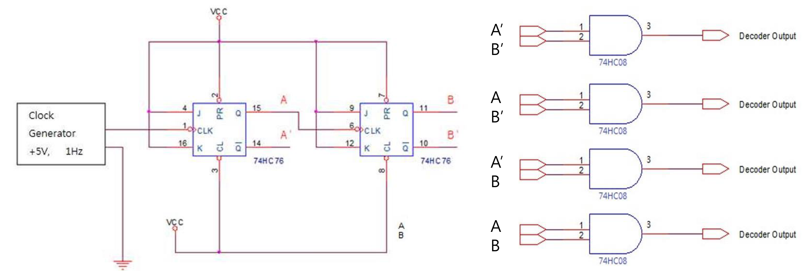</div>
<div class="stage" data-fit="1"><h3>단계 1 준비 ① · 보드·칩·전원 준비</h3><p class="banner">전원·신호발생기 OFF</p><figure class="board">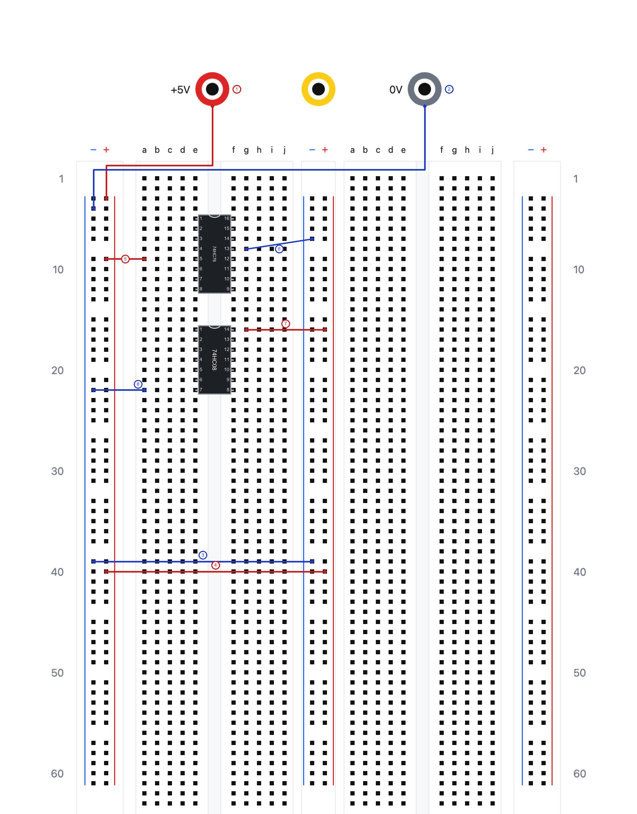</figure><p class="operation">U1·U2를 놓고 전원 잭·레일 브리지·칩 전원을 연결해요 · U1은 pin 5·13, U2는 pin 14·7이에요</p><ol class="steps"><li class="step" data-kind="vcc"><span class="box"></span><span class="n">1</span><span class="route">전원잭 → 좌 VCC레일3행</span><span class="desc">전원장치 +5V 잭</span></li><li class="step" data-kind="gnd"><span class="box"></span><span class="n">2</span><span class="route">전원잭 → 좌 GND레일4행</span><span class="desc">전원장치 0V 잭</span></li><li class="step" data-kind="gnd"><span class="box"></span><span class="n">3</span><span class="route">좌 GND레일39행 → 중앙GND레일39행</span><span class="desc">레일 브리지</span></li><li class="step" data-kind="vcc"><span class="box"></span><span class="n">4</span><span class="route">좌 VCC레일40행 → 중앙VCC레일40행</span><span class="desc">레일 브리지</span></li><li class="step" data-kind="vcc"><span class="box"></span><span class="n">5</span><span class="route">좌 a9 → 좌 VCC레일9행</span><span class="desc">pin 5 -&gt; +5V 레일</span></li><li class="step" data-kind="gnd"><span class="box"></span><span class="n">6</span><span class="route">좌 g8 → 중앙GND레일7행</span><span class="desc">pin 13 -&gt; GND 레일</span></li><li class="step" data-kind="vcc"><span class="box"></span><span class="n">7</span><span class="route">좌 g16 → 중앙VCC레일16행</span><span class="desc">pin 14 -&gt; +5V 레일</span></li><li class="step" data-kind="gnd"><span class="box"></span><span class="n">8</span><span class="route">좌 a22 → 좌 GND레일22행</span><span class="desc">pin 7 -&gt; GND 레일</span></li></ol><p><span class="box"></span><b>완료 확인:</b> 칩 두 개의 위치·노치와 전원핀·레일 극성을 대조했나요?</p></div>
<div class="stage" data-fit="2"><h3>단계 1 준비 ② · U1 입력 고정</h3><p class="banner">전원·신호발생기 OFF</p><figure class="board">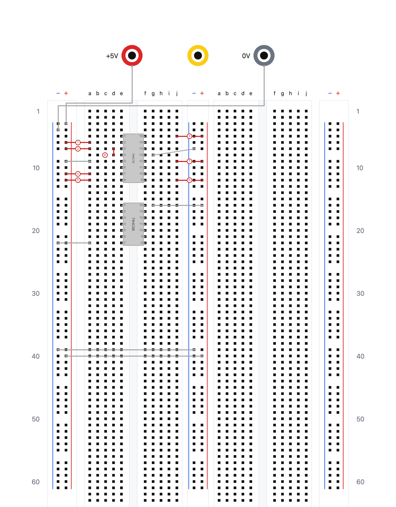</figure><p class="operation">U1 pin 2·3·4·16·7·8·9·12를 VCC에 연결해요</p><ol class="steps"><li class="step" data-kind="vcc"><span class="box"></span><span class="n">1</span><span class="route">좌 a6 → 좌 VCC레일6행</span><span class="desc">U1 pin 2 J·K·PR·CL 고정 -&gt; +5V 레일</span></li><li class="step" data-kind="vcc"><span class="box"></span><span class="n">2</span><span class="route">좌 a7 → 좌 VCC레일7행</span><span class="desc">U1 pin 3 J·K·PR·CL 고정 -&gt; +5V 레일</span></li><li class="step" data-kind="vcc"><span class="box"></span><span class="n">3</span><span class="route">좌 j5 → 중앙VCC레일5행</span><span class="desc">U1 pin 16 J·K·PR·CL 고정 -&gt; +5V 레일</span></li><li class="step" data-kind="vcc"><span class="box"></span><span class="n">4</span><span class="route">좌 a11 → 좌 VCC레일11행</span><span class="desc">U1 pin 7 J·K·PR·CL 고정 -&gt; +5V 레일</span></li><li class="step" data-kind="vcc"><span class="box"></span><span class="n">5</span><span class="route">좌 a12 → 좌 VCC레일12행</span><span class="desc">U1 pin 8 J·K·PR·CL 고정 -&gt; +5V 레일</span></li><li class="step" data-kind="vcc"><span class="box"></span><span class="n">6</span><span class="route">좌 j12 → 중앙VCC레일12행</span><span class="desc">U1 pin 9 J·K·PR·CL 고정 -&gt; +5V 레일</span></li><li class="step" data-kind="vcc"><span class="box"></span><span class="n">7</span><span class="route">좌 j9 → 중앙VCC레일9행</span><span class="desc">U1 pin 12 J·K·PR·CL 고정 -&gt; +5V 레일</span></li><li class="step" data-kind="vcc"><span class="box"></span><span class="n">8</span><span class="route">좌 d7 → 좌 d8</span><span class="desc">U1 pin 4 J 고정 -&gt; pin 3 스트립(+5V)</span></li></ol><p><span class="box"></span><b>완료 확인:</b> 여덟 핀이 모두 VCC 레일에 닿았나요?</p></div>
<div class="stage" data-fit="3"><h3>단계 1 준비 ③ · LED 준비</h3><p class="banner">전원·신호발생기 OFF</p><figure class="board">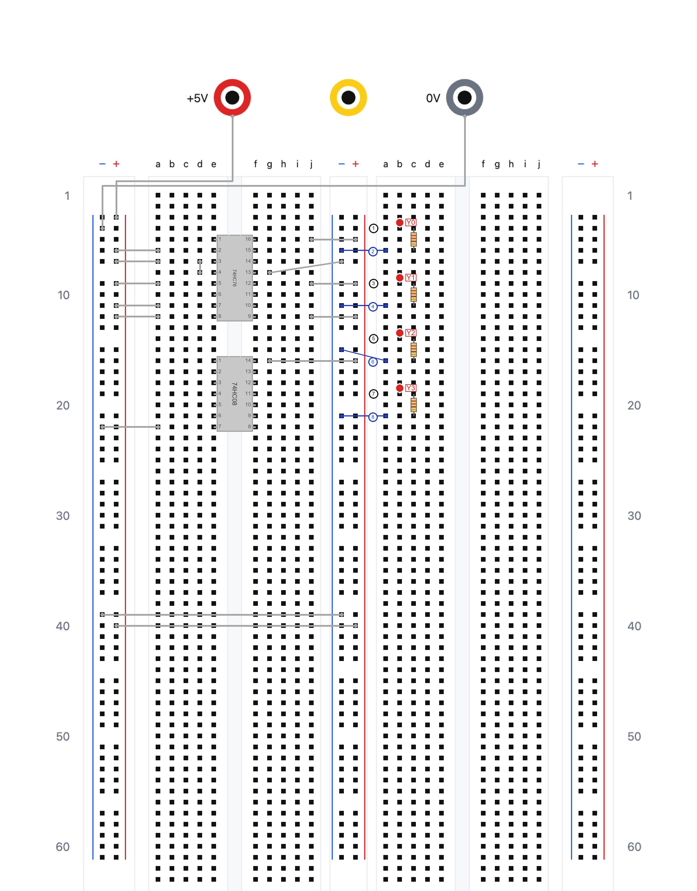</figure><p class="operation">Y0·Y1·Y2·Y3의 LED·330Ω·GND 사슬을 연결해요 · 출력 급전은 기능 단계에서 연결해요</p><ol class="steps"><li class="step" data-kind="sig"><span class="box"></span><span class="n">1</span><span class="route">우 b3 → 우 c6</span><span class="desc">Y0: LED(우 b3→우 b4) + 330Ω(우 c4→우 c6) 직렬 · Y0: 출력 1 이면 켜짐</span></li><li class="step" data-kind="gnd"><span class="box"></span><span class="n">2</span><span class="route">우 a6 → 중앙GND레일6행</span><span class="desc">Y0 저항 아래 -&gt; GND</span></li><li class="step" data-kind="sig"><span class="box"></span><span class="n">3</span><span class="route">우 b8 → 우 c11</span><span class="desc">Y1: LED(우 b8→우 b9) + 330Ω(우 c9→우 c11) 직렬 · Y1: 출력 1 이면 켜짐</span></li><li class="step" data-kind="gnd"><span class="box"></span><span class="n">4</span><span class="route">우 a11 → 중앙GND레일11행</span><span class="desc">Y1 저항 아래 -&gt; GND</span></li><li class="step" data-kind="sig"><span class="box"></span><span class="n">5</span><span class="route">우 b13 → 우 c16</span><span class="desc">Y2: LED(우 b13→우 b14) + 330Ω(우 c14→우 c16) 직렬 · Y2: 출력 1 이면 켜짐</span></li><li class="step" data-kind="gnd"><span class="box"></span><span class="n">6</span><span class="route">우 a16 → 중앙GND레일15행</span><span class="desc">Y2 저항 아래 -&gt; GND</span></li><li class="step" data-kind="sig"><span class="box"></span><span class="n">7</span><span class="route">우 b18 → 우 c21</span><span class="desc">Y3: LED(우 b18→우 b19) + 330Ω(우 c19→우 c21) 직렬 · Y3: 출력 1 이면 켜짐</span></li><li class="step" data-kind="gnd"><span class="box"></span><span class="n">8</span><span class="route">우 a21 → 중앙GND레일21행</span><span class="desc">Y3 저항 아래 -&gt; GND</span></li></ol><p><span class="box"></span><b>완료 확인:</b> LED 순서와 극성·330Ω·GND를 대조했나요? 출력 급전선 자리는 비어 있나요?</p></div>
<div class="stage" data-fit="4"><h3>단계 1</h3><p class="operation">전원과 발생기 출력을 끈 상태로 준비 ③까지 마쳐요 · 입력 CLK을 U1 pin1에 꽂아요</p><figure class="board">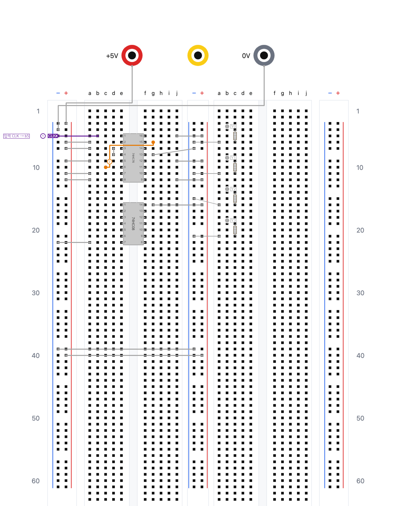</figure><ol class="steps"><li class="step" data-kind="sig"><span class="box"></span><span class="n">1</span><span class="route">좌 GND레일5행 → 좌 b5</span><span class="desc">입력 CLK -&gt; U1 pin 1 · 1 이면 레일 쪽 끝을 +5V 레일로 옮겨요</span></li><li class="step" data-kind="sig"><span class="box"></span><span class="n" style="background:#e67800">2</span><span class="route">좌 g6 → 좌 c10</span><span class="desc">A: U1 pin 15 -&gt; U1 pin 6</span></li></ol></div>
<div class="stage" data-fit="5"><h3>단계 2</h3><figure class="board">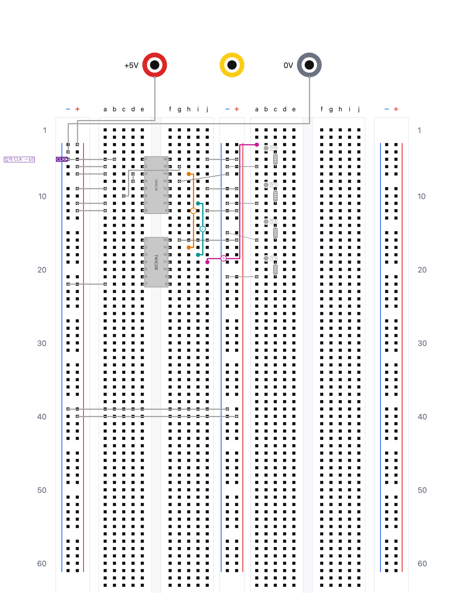</figure><ol class="steps"><li class="step" data-kind="sig"><span class="box"></span><span class="n" style="background:#e67800">1</span><span class="route">좌 h7 → 좌 h17</span><span class="desc">A': U1 pin 14 -&gt; U2 pin 13</span></li><li class="step" data-kind="sig"><span class="box"></span><span class="n" style="background:#009696">2</span><span class="route">좌 i11 → 좌 i18</span><span class="desc">B': U1 pin 10 -&gt; U2 pin 12</span></li><li class="step" data-kind="sig"><span class="box"></span><span class="n" style="background:#c81e96">3</span><span class="route">좌 j19 → 우 a3</span><span class="desc">Y0 = U2 pin 11 -&gt; LED Y0</span></li></ol></div>
<div class="stage" data-fit="6"><h3>단계 3</h3><figure class="board">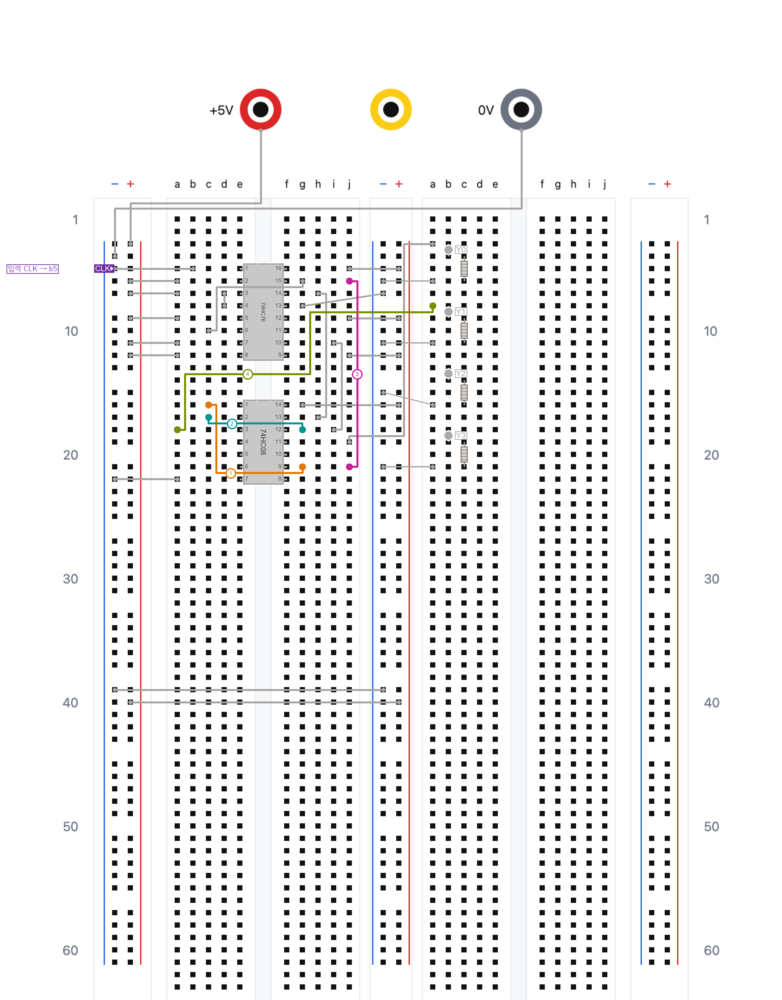</figure><ol class="steps"><li class="step" data-kind="sig"><span class="box"></span><span class="n" style="background:#e67800">1</span><span class="route">좌 g21 → 좌 c16</span><span class="desc">A: U2 pin 9 -&gt; U2 pin 1</span></li><li class="step" data-kind="sig"><span class="box"></span><span class="n" style="background:#009696">2</span><span class="route">좌 g18 → 좌 c17</span><span class="desc">B': U2 pin 12 -&gt; U2 pin 2</span></li><li class="step" data-kind="sig"><span class="box"></span><span class="n" style="background:#c81e96">3</span><span class="route">좌 j6 → 좌 j21</span><span class="desc">A: U1 pin 15 -&gt; U2 pin 9</span></li><li class="step" data-kind="sig"><span class="box"></span><span class="n" style="background:#788c00">4</span><span class="route">좌 a18 → 우 a8</span><span class="desc">Y1 = U2 pin 3 -&gt; LED Y1</span></li></ol><h4>V3 · Y0·Y1 순서 확인</h4><section class="observation-procedure">
<p class="observation-purpose">LED Y0이 켜진 다음 구간에 LED Y1이 켜지고, 그 뒤 두 구간은 둘 다 꺼지는지 확인한다.</p>
<p><b>준비·초기화:</b> 전원과 발생기 출력을 끈 상태에서 CLK 선을 발생기에 잇기 전에 오실로스코프로 사각파 0~+5V·주기 1s를 확인한다. 설정 예는 오프셋 +2.5V, 진폭 5Vpp이고 장비의 Vpp·피크 표시와 부하 설정은 현장에서 확인한다. 발생기·오실로스코프·회로 GND를 공통으로 잇고 CLK 선을 발생기에 잇는다. 전원을 켠 뒤 발생기를 0V로 두고 시작한다. 회로에 초기화 입력이 없으므로 시작 LED는 정해지지 않는다. 다음 배선 전 발생기 출력과 전원을 끈다.</p>
<aside class="io-locations" aria-label="입력과 LED 위치"><p class="io-title"><b>입력·LED 위치</b></p><section class="io-groups"><section class="io-group"><b>왼쪽 입력 점퍼</b><span class="io-direction">위 ↓ 아래</span><ol><li class="io-input" title="좌 GND레일5행"><span class="io-rank">첫째</span><span class="io-symbol">●</span><strong>CLK</strong></li></ol></section><section class="io-group io-led-group"><b>오른쪽 LED</b><span class="io-direction">위 ↓ 아래</span><ol><li class="io-led"><span class="io-symbol">○</span><span>①</span><strong>Y0</strong></li><li class="io-led"><span class="io-symbol">○</span><span>②</span><strong>Y1</strong></li><li class="io-led io-muted"><span class="io-symbol">○</span><span>③</span><strong>Y2</strong></li><li class="io-led io-muted"><span class="io-symbol">○</span><span>④</span><strong>Y3</strong></li></ol></section></section></aside><table class="comparison-table"><colgroup><col style="width:14.285714285714286%;"><col style="width:14.285714285714286%;"><col style="width:14.285714285714286%;"><col style="width:14.285714285714286%;"><col style="width:14.285714285714286%;"><col style="width:14.285714285714286%;"><col style="width:14.285714285714286%;"></colgroup><thead><tr>
<th>순서</th>
<th>조작</th>
<th>입력 설정</th>
<th>예상 켜지는 LED</th>
<th>예상 꺼지는 LED</th>
<th>유지·반전·미정</th>
<th>실제 결과</th>
</tr></thead><tbody>
<tr>
<td>1</td>
<td>발생기 0V로 시작</td>
<td>CLK = 0</td>
<td>없음</td>
<td>없음</td>
<td>①Y0: 미정<br>②Y1: 미정</td>
<td class="actual"></td>
</tr>
<tr>
<td>2</td>
<td>반복 클록, Y0이 켜진 구간을 찾는다</td>
<td><span class="input-change">CLK = 반복 클록</span></td>
<td>①Y0</td>
<td>②Y1</td>
<td>없음</td>
<td class="actual"></td>
</tr>
<tr>
<td>3</td>
<td>다음 구간</td>
<td>CLK = 반복 클록</td>
<td>②Y1</td>
<td>①Y0</td>
<td>없음</td>
<td class="actual"></td>
</tr>
<tr>
<td>4</td>
<td>그다음 두 구간</td>
<td>CLK = 반복 클록</td>
<td>없음</td>
<td>①Y0 · ②Y1</td>
<td>없음</td>
<td class="actual"></td>
</tr>
<tr>
<td>5</td>
<td>Y0 구간으로 복귀</td>
<td>CLK = 반복 클록</td>
<td>①Y0</td>
<td>②Y1</td>
<td>없음</td>
<td class="actual"></td>
</tr>
</tbody></table></section></div>
<div class="stage" data-fit="7"><h3>단계 4</h3><figure class="board">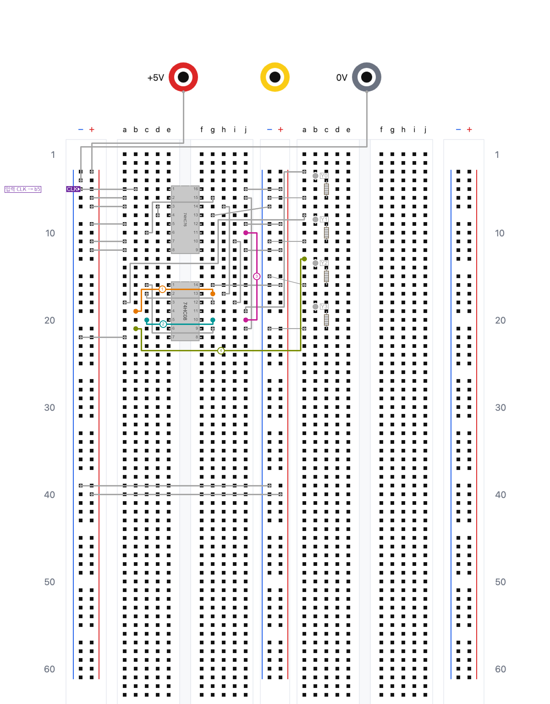</figure><ol class="steps"><li class="step" data-kind="sig"><span class="box"></span><span class="n" style="background:#e67800">1</span><span class="route">좌 g17 → 좌 b19</span><span class="desc">A': U2 pin 13 -&gt; U2 pin 4</span></li><li class="step" data-kind="sig"><span class="box"></span><span class="n" style="background:#009696">2</span><span class="route">좌 g20 → 좌 c20</span><span class="desc">B: U2 pin 10 -&gt; U2 pin 5</span></li><li class="step" data-kind="sig"><span class="box"></span><span class="n" style="background:#c81e96">3</span><span class="route">좌 j10 → 좌 j20</span><span class="desc">B: U1 pin 11 -&gt; U2 pin 10</span></li><li class="step" data-kind="sig"><span class="box"></span><span class="n" style="background:#788c00">4</span><span class="route">좌 b21 → 우 a13</span><span class="desc">Y2 = U2 pin 6 -&gt; LED Y2</span></li></ol></div>
<div class="stage" data-fit="8"><h3>단계 5</h3><figure class="board">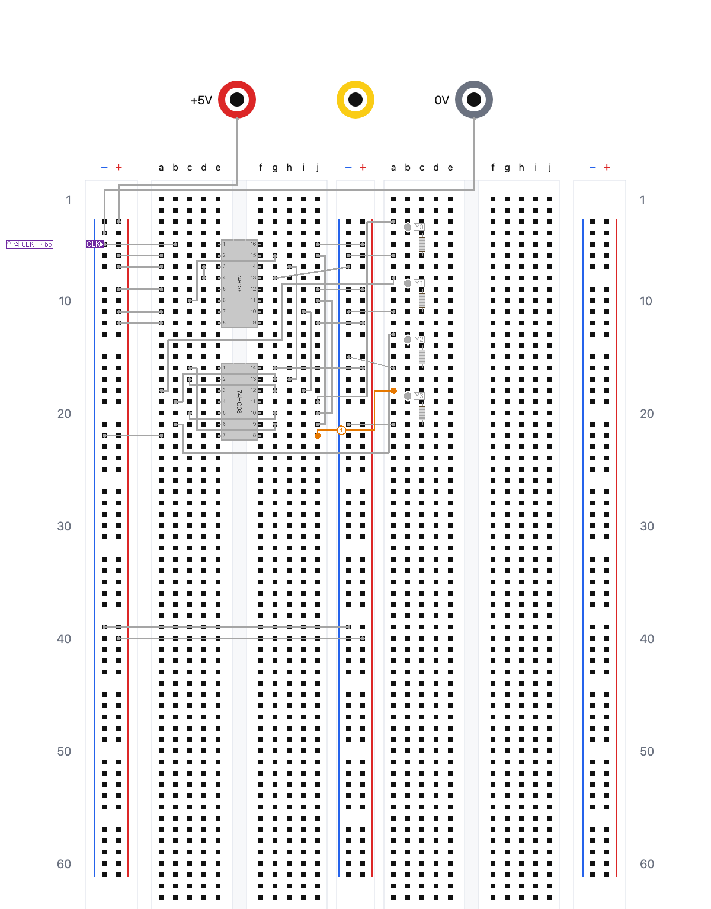</figure><ol class="steps"><li class="step" data-kind="sig"><span class="box"></span><span class="n" style="background:#e67800">1</span><span class="route">좌 j22 → 우 a18</span><span class="desc">Y3 = U2 pin 8 -&gt; LED Y3</span></li></ol></div>
<div class="fit" data-fit="9">
<div class="wirebox"><h3>완성본</h3>
<figure class="board">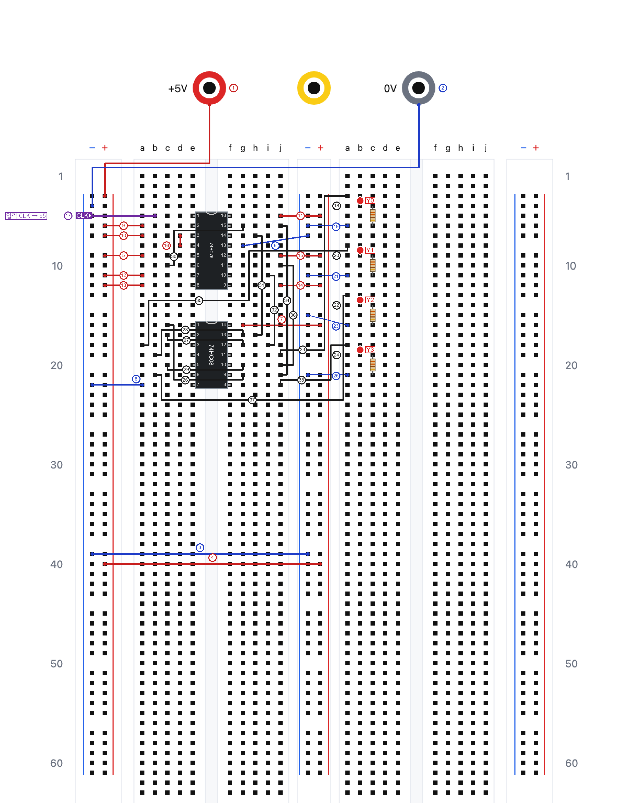</figure>
</div></div>
<div class="fit" data-fit="10">

<div class="tblock">
<h3>T1 · 2단 2진 카운터 출력 순서 기록</h3>
<p class="table-purpose">반복 클록을 넣었을 때 네 출력이 Y0, Y1, Y2, Y3 순서로 하나씩 켜지고 다시 Y0으로 돌아오는지 확인한다.</p>
<aside class="io-locations" aria-label="입력과 LED 위치"><p class="io-title"><b>입력·LED 위치</b></p><section class="io-groups"><section class="io-group"><b>왼쪽 입력 점퍼</b><span class="io-direction">위 ↓ 아래</span><ol><li class="io-input" title="좌 GND레일5행"><span class="io-rank">첫째</span><span class="io-symbol">●</span><strong>CLK</strong></li></ol></section><section class="io-group io-led-group"><b>오른쪽 LED</b><span class="io-direction">위 ↓ 아래</span><ol><li class="io-led"><span class="io-symbol">○</span><span>①</span><strong>Y0</strong></li><li class="io-led"><span class="io-symbol">○</span><span>②</span><strong>Y1</strong></li><li class="io-led"><span class="io-symbol">○</span><span>③</span><strong>Y2</strong></li><li class="io-led"><span class="io-symbol">○</span><span>④</span><strong>Y3</strong></li></ol></section></section></aside>
<table class="comparison-table"><colgroup><col style="width:7%;"><col style="width:23%;"><col style="width:20%;"><col style="width:18%;"><col style="width:18%;"><col style="width:14%;"></colgroup><thead><tr>
<th>스텝</th>
<th>조작</th>
<th>입력 설정</th>
<th>예상 켜지는 LED</th>
<th>예상 꺼지는 LED</th>
<th>실제 결과</th>
</tr></thead><tbody>
<tr>
<td>S1</td>
<td>전원과 발생기를 켠다. AB=00 구간. Y0이 켜진 때를 기준으로 잡는다</td>
<td>CLK=반복 클록</td>
<td>①Y0</td>
<td>②Y1 · ③Y2 · ④Y3</td>
<td class="actual"></td>
</tr>
<tr>
<td>S2</td>
<td>AB=10 구간</td>
<td>CLK=반복 클록</td>
<td>②Y1</td>
<td>①Y0 · ③Y2 · ④Y3</td>
<td class="actual"></td>
</tr>
<tr>
<td>S3</td>
<td>AB=01 구간</td>
<td>CLK=반복 클록</td>
<td>③Y2</td>
<td>①Y0 · ②Y1 · ④Y3</td>
<td class="actual"></td>
</tr>
<tr>
<td>S4</td>
<td>AB=11 구간</td>
<td>CLK=반복 클록</td>
<td>④Y3</td>
<td>①Y0 · ②Y1 · ③Y2</td>
<td class="actual"></td>
</tr>
<tr>
<td>S5</td>
<td>AB=00 구간으로 복귀</td>
<td>CLK=반복 클록</td>
<td>①Y0</td>
<td>②Y1 · ③Y2 · ④Y3</td>
<td class="actual"></td>
</tr>
</tbody></table>
</div>

<div class="circuit-notes"><b>메모</b></div>
</div></section>
<section class="circuit">
<div class="fit" data-fit="11"><div class="trail">실험 1: C1 <span class="sep">|</span> 실험 3: <b>C2</b> › C3 › C4 › C5</div><h2>C2 · 실험 3) 7-Segment 표시기를 갖는 BCD 카운터 — 1. BCD Counter (7490) · 기록: T2</h2><div class="banner">앞 회로의 선과 LED 사슬까지 전부 뽑아요. 레일 브리지만 그대로 둬요(새 선·부품은 단계 그림을 따라 꽂아요) · 뺄 칩: 74HC76, 74HC08 · 꽂을 칩: 7490</div>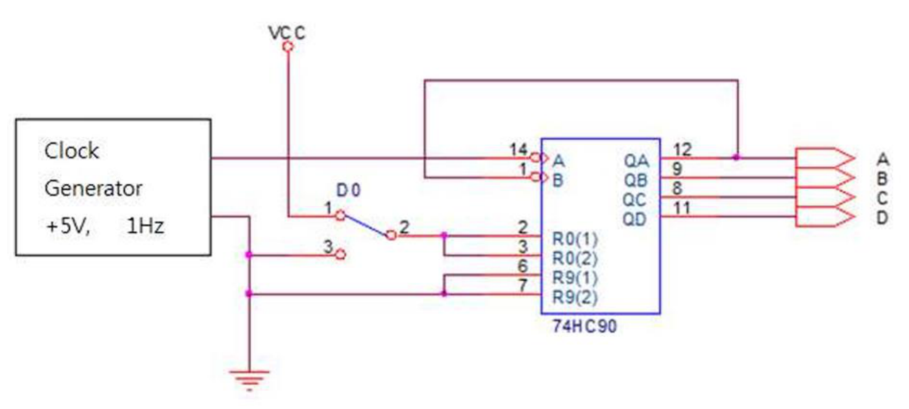</div>
<div class="stage" data-fit="12"><h3>단계 1 준비 ① · 칩·전원·R9 준비</h3><p class="banner">전원·신호발생기 OFF</p><figure class="board">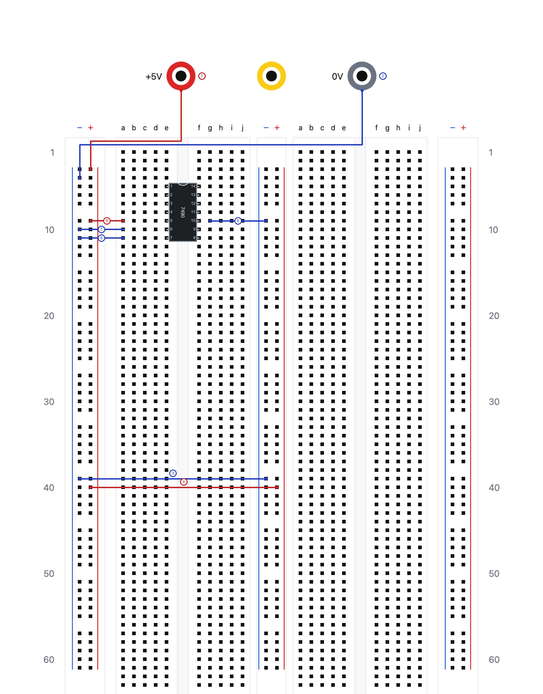</figure><p class="operation">7490을 놓고 pin 5를 VCC, pin 10을 GND에 연결해요 · pin 6·7을 GND에 연결해요</p><ol class="steps"><li class="step" data-kind="vcc"><span class="box"></span><span class="n">1</span><span class="route">전원잭 → 좌 VCC레일3행</span><span class="desc">전원장치 +5V 잭</span></li><li class="step" data-kind="gnd"><span class="box"></span><span class="n">2</span><span class="route">전원잭 → 좌 GND레일4행</span><span class="desc">전원장치 0V 잭</span></li><li class="step" data-kind="gnd"><span class="box"></span><span class="n">3</span><span class="route">좌 GND레일39행 → 중앙GND레일39행</span><span class="desc">레일 브리지</span></li><li class="step" data-kind="vcc"><span class="box"></span><span class="n">4</span><span class="route">좌 VCC레일40행 → 중앙VCC레일40행</span><span class="desc">레일 브리지</span></li><li class="step" data-kind="vcc"><span class="box"></span><span class="n">5</span><span class="route">좌 a9 → 좌 VCC레일9행</span><span class="desc">pin 5 -&gt; +5V 레일</span></li><li class="step" data-kind="gnd"><span class="box"></span><span class="n">6</span><span class="route">좌 g9 → 중앙GND레일9행</span><span class="desc">pin 10 -&gt; GND 레일</span></li><li class="step" data-kind="gnd"><span class="box"></span><span class="n">7</span><span class="route">좌 a10 → 좌 GND레일10행</span><span class="desc">U1 pin 6 R9 -&gt; GND 레일</span></li><li class="step" data-kind="gnd"><span class="box"></span><span class="n">8</span><span class="route">좌 a11 → 좌 GND레일11행</span><span class="desc">U1 pin 7 R9 -&gt; GND 레일</span></li></ol><p><span class="box"></span><b>완료 확인:</b> 노치와 전원핀, R9 두 핀이 GND인지 대조했나요?</p></div>
<div class="stage" data-fit="13"><h3>단계 1 준비 ② · LED 준비</h3><p class="banner">전원·신호발생기 OFF</p><figure class="board">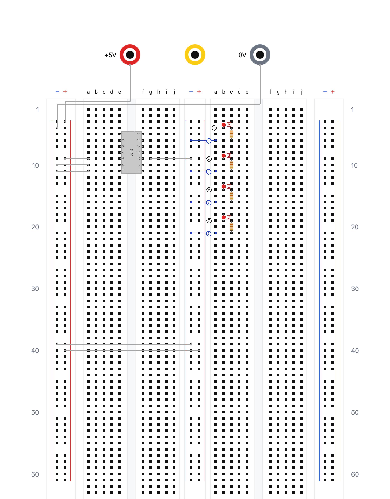</figure><p class="operation">A·B·C·D의 LED·330Ω·GND 사슬을 연결해요 · 출력 급전은 기능 단계에서 연결해요</p><ol class="steps"><li class="step" data-kind="sig"><span class="box"></span><span class="n">1</span><span class="route">우 b3 → 우 c6</span><span class="desc">A: LED(우 b3→우 b4) + 330Ω(우 c4→우 c6) 직렬 · A: 출력 1 이면 켜짐</span></li><li class="step" data-kind="gnd"><span class="box"></span><span class="n">2</span><span class="route">우 a6 → 중앙GND레일6행</span><span class="desc">A 저항 아래 -&gt; GND</span></li><li class="step" data-kind="sig"><span class="box"></span><span class="n">3</span><span class="route">우 b8 → 우 c11</span><span class="desc">B: LED(우 b8→우 b9) + 330Ω(우 c9→우 c11) 직렬 · B: 출력 1 이면 켜짐</span></li><li class="step" data-kind="gnd"><span class="box"></span><span class="n">4</span><span class="route">우 a11 → 중앙GND레일11행</span><span class="desc">B 저항 아래 -&gt; GND</span></li><li class="step" data-kind="sig"><span class="box"></span><span class="n">5</span><span class="route">우 b13 → 우 c16</span><span class="desc">C: LED(우 b13→우 b14) + 330Ω(우 c14→우 c16) 직렬 · C: 출력 1 이면 켜짐</span></li><li class="step" data-kind="gnd"><span class="box"></span><span class="n">6</span><span class="route">우 a16 → 중앙GND레일16행</span><span class="desc">C 저항 아래 -&gt; GND</span></li><li class="step" data-kind="sig"><span class="box"></span><span class="n">7</span><span class="route">우 b18 → 우 c21</span><span class="desc">D: LED(우 b18→우 b19) + 330Ω(우 c19→우 c21) 직렬 · D: 출력 1 이면 켜짐</span></li><li class="step" data-kind="gnd"><span class="box"></span><span class="n">8</span><span class="route">우 a21 → 중앙GND레일21행</span><span class="desc">D 저항 아래 -&gt; GND</span></li></ol><p><span class="box"></span><b>완료 확인:</b> LED 순서와 극성·330Ω·GND를 대조했나요? 출력 급전선 자리는 비어 있나요?</p></div>
<div class="stage" data-fit="14"><h3>단계 1</h3><p class="operation">전원과 발생기 출력을 끈 상태로 준비 ②까지 마쳐요 · 입력 R0을 U1 pin2에, 입력 CLK을 U1 pin14에 꽂아요</p><figure class="board">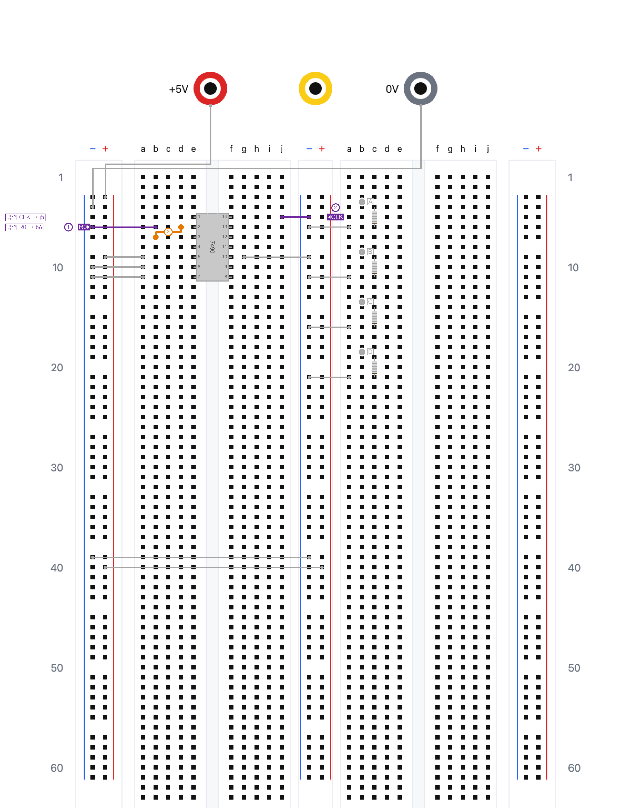</figure><ol class="steps"><li class="step" data-kind="sig"><span class="box"></span><span class="n">1</span><span class="route">좌 GND레일6행 → 좌 b6</span><span class="desc">입력 R0 -&gt; U1 pin 2 · 1 이면 레일 쪽 끝을 +5V 레일로 옮겨요</span></li><li class="step" data-kind="sig"><span class="box"></span><span class="n">2</span><span class="route">중앙GND레일5행 → 좌 j5</span><span class="desc">입력 CLK -&gt; U1 pin 14 · 1 이면 레일 쪽 끝을 +5V 레일로 옮겨요</span></li><li class="step" data-kind="sig"><span class="box"></span><span class="n" style="background:#e67800">3</span><span class="route">좌 d6 → 좌 b7</span><span class="desc">R0: U1 pin 2 -&gt; U1 pin 3</span></li></ol></div>
<div class="stage" data-fit="15"><h3>단계 2</h3><figure class="board">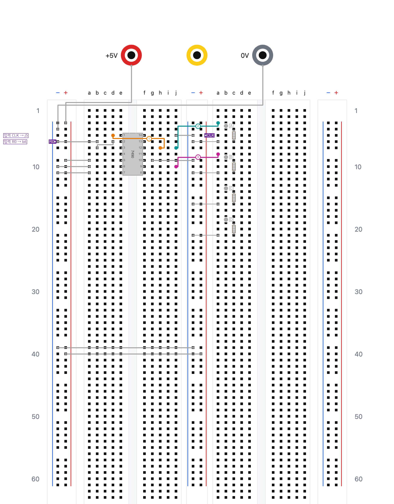</figure><ol class="steps"><li class="step" data-kind="sig"><span class="box"></span><span class="n" style="background:#e67800">1</span><span class="route">좌 h7 → 좌 d5</span><span class="desc">QA: U1 pin 12 -&gt; U1 pin 1</span></li><li class="step" data-kind="sig"><span class="box"></span><span class="n" style="background:#009696">2</span><span class="route">좌 j7 → 우 a3</span><span class="desc">A = U1 pin 12 -&gt; LED A</span></li><li class="step" data-kind="sig"><span class="box"></span><span class="n" style="background:#c81e96">3</span><span class="route">좌 j10 → 우 a8</span><span class="desc">B = U1 pin 9 -&gt; LED B</span></li></ol></div>
<div class="stage" data-fit="16"><h3>단계 3</h3><figure class="board">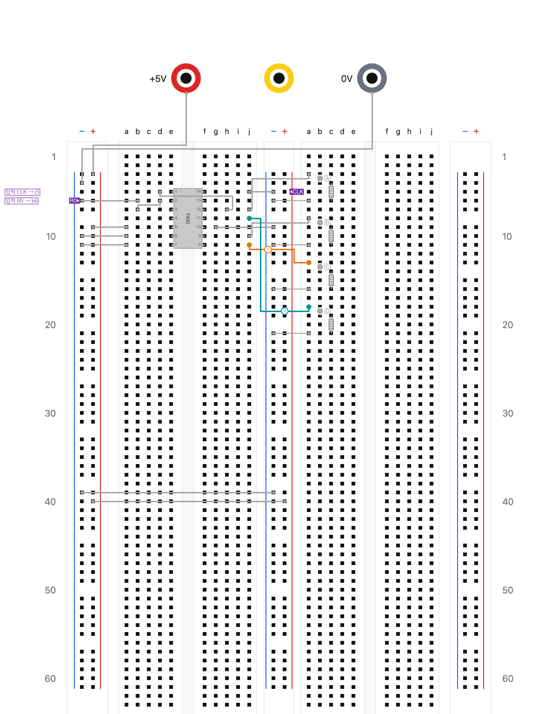</figure><ol class="steps"><li class="step" data-kind="sig"><span class="box"></span><span class="n" style="background:#e67800">1</span><span class="route">좌 j11 → 우 a13</span><span class="desc">C = U1 pin 8 -&gt; LED C</span></li><li class="step" data-kind="sig"><span class="box"></span><span class="n" style="background:#009696">2</span><span class="route">좌 j8 → 우 a18</span><span class="desc">D = U1 pin 11 -&gt; LED D</span></li></ol></div>
<div class="fit" data-fit="17">
<div class="wirebox"><h3>완성본</h3>
<figure class="board">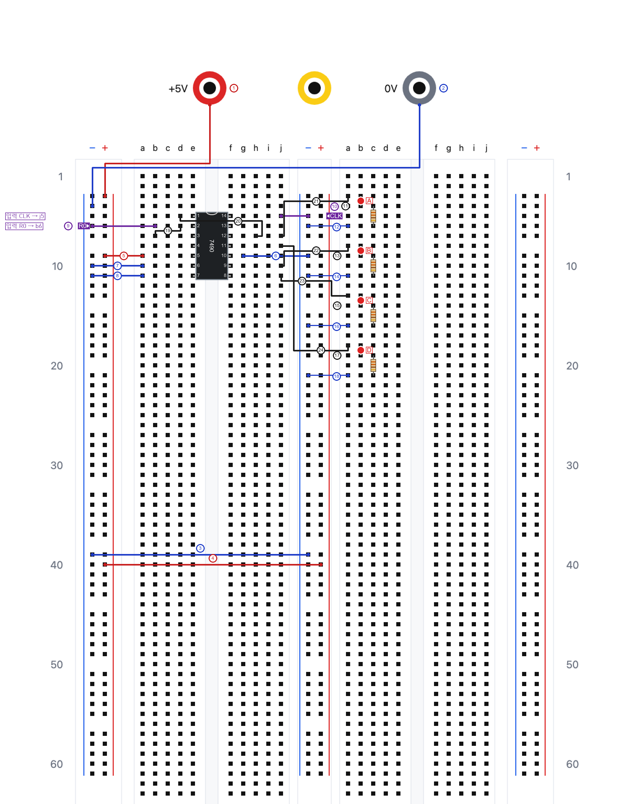</figure>
</div></div>
<div class="fit" data-fit="18">
<div class="unused"><b>미사용 핀</b><div class="chipunused"><b>U1 = 7490</b><ul><li><span class="box"></span>미사용 4, 13 · 연결하지 않음 · No Connect</li></ul></div></div>
<div class="tblock">
<h3>T2 · BCD Counter 출력 기록</h3>
<p class="table-purpose">R0으로 0에 고정한 뒤 해제하면 A~D LED가 COUNT 0부터 9까지 순서대로 바뀌고 0으로 돌아오는지 확인한다.</p>
<aside class="io-locations" aria-label="입력과 LED 위치"><p class="io-title"><b>입력·LED 위치</b></p><section class="io-groups"><section class="io-group"><b>왼쪽 입력 점퍼</b><span class="io-direction">위 ↓ 아래</span><ol><li class="io-input" title="좌 GND레일6행"><span class="io-rank">첫째</span><span class="io-symbol">●</span><strong>R0</strong></li></ol></section><section class="io-group"><b>가운데 입력 점퍼</b><span class="io-direction">위 ↓ 아래</span><ol><li class="io-input" title="중앙GND레일5행"><span class="io-rank">첫째</span><span class="io-symbol">●</span><strong>CLK</strong></li></ol></section><section class="io-group io-led-group"><b>오른쪽 LED</b><span class="io-direction">위 ↓ 아래</span><ol><li class="io-led"><span class="io-symbol">○</span><span>①</span><strong>A</strong></li><li class="io-led"><span class="io-symbol">○</span><span>②</span><strong>B</strong></li><li class="io-led"><span class="io-symbol">○</span><span>③</span><strong>C</strong></li><li class="io-led"><span class="io-symbol">○</span><span>④</span><strong>D</strong></li></ol></section></section></aside>
<table class="comparison-table"><colgroup><col style="width:7%;"><col style="width:23%;"><col style="width:20%;"><col style="width:18%;"><col style="width:18%;"><col style="width:14%;"></colgroup><thead><tr>
<th>스텝</th>
<th>조작</th>
<th>입력 설정</th>
<th>예상 켜지는 LED</th>
<th>예상 꺼지는 LED</th>
<th>실제 결과</th>
</tr></thead><tbody>
<tr>
<td>R1</td>
<td>R0 점퍼를 +5V에 꽂고 전원과 발생기를 켠다. 클록이 돌아도 0을 유지하는지 본다</td>
<td>CLK=반복 클록<br>R0=1</td>
<td>없음</td>
<td>①A · ②B · ③C · ④D</td>
<td class="actual"></td>
</tr>
<tr>
<td>N1</td>
<td>R0 점퍼를 GND로 옮긴 뒤 COUNT 1 구간</td>
<td>CLK=반복 클록<br><span class="input-change">R0=0</span></td>
<td>①A</td>
<td>②B · ③C · ④D</td>
<td class="actual"></td>
</tr>
<tr>
<td>N2</td>
<td>COUNT 2 구간</td>
<td>CLK=반복 클록<br>R0=0</td>
<td>②B</td>
<td>①A · ③C · ④D</td>
<td class="actual"></td>
</tr>
<tr>
<td>N3</td>
<td>COUNT 3 구간</td>
<td>CLK=반복 클록<br>R0=0</td>
<td>①A · ②B</td>
<td>③C · ④D</td>
<td class="actual"></td>
</tr>
<tr>
<td>N4</td>
<td>COUNT 4 구간</td>
<td>CLK=반복 클록<br>R0=0</td>
<td>③C</td>
<td>①A · ②B · ④D</td>
<td class="actual"></td>
</tr>
<tr>
<td>N5</td>
<td>COUNT 5 구간</td>
<td>CLK=반복 클록<br>R0=0</td>
<td>①A · ③C</td>
<td>②B · ④D</td>
<td class="actual"></td>
</tr>
<tr>
<td>N6</td>
<td>COUNT 6 구간</td>
<td>CLK=반복 클록<br>R0=0</td>
<td>②B · ③C</td>
<td>①A · ④D</td>
<td class="actual"></td>
</tr>
<tr>
<td>N7</td>
<td>COUNT 7 구간</td>
<td>CLK=반복 클록<br>R0=0</td>
<td>①A · ②B · ③C</td>
<td>④D</td>
<td class="actual"></td>
</tr>
<tr>
<td>N8</td>
<td>COUNT 8 구간</td>
<td>CLK=반복 클록<br>R0=0</td>
<td>④D</td>
<td>①A · ②B · ③C</td>
<td class="actual"></td>
</tr>
<tr>
<td>N9</td>
<td>COUNT 9 구간</td>
<td>CLK=반복 클록<br>R0=0</td>
<td>①A · ④D</td>
<td>②B · ③C</td>
<td class="actual"></td>
</tr>
<tr>
<td>N0</td>
<td>COUNT 0으로 복귀</td>
<td>CLK=반복 클록<br>R0=0</td>
<td>없음</td>
<td>①A · ②B · ③C · ④D</td>
<td class="actual"></td>
</tr>
</tbody></table>
</div>
<div class="tblock">
<h3>T3 · Truth Table - COUNT — 참조</h3>
<table><thead><tr><th>COUNT</th><th>QD</th><th>QC</th><th>QB</th><th>QA</th></tr></thead><tbody><tr><td>0</td><td>L</td><td>L</td><td>L</td><td>L</td></tr><tr><td>1</td><td>L</td><td>L</td><td>L</td><td>H</td></tr><tr><td>2</td><td>L</td><td>L</td><td>H</td><td>L</td></tr><tr><td>3</td><td>L</td><td>L</td><td>H</td><td>H</td></tr><tr><td>4</td><td>L</td><td>H</td><td>L</td><td>L</td></tr><tr><td>5</td><td>L</td><td>H</td><td>L</td><td>H</td></tr><tr><td>6</td><td>L</td><td>H</td><td>H</td><td>L</td></tr><tr><td>7</td><td>L</td><td>H</td><td>H</td><td>H</td></tr><tr><td>8</td><td>H</td><td>L</td><td>L</td><td>L</td></tr><tr><td>9</td><td>H</td><td>L</td><td>L</td><td>H</td></tr></tbody></table>
</div>
<div class="tblock">
<h3>T4 · Truth Table - Reset — 참조</h3>
<table><thead><tr><th>R0(1)</th><th>R0(2)</th><th>R9(1)</th><th>R9(2)</th><th>QD</th><th>QC</th><th>QB</th><th>QA</th></tr></thead><tbody><tr><td>H</td><td>H</td><td>L</td><td>X</td><td>L</td><td>L</td><td>L</td><td>L</td></tr><tr><td>H</td><td>H</td><td>X</td><td>L</td><td>L</td><td>L</td><td>L</td><td>L</td></tr><tr><td>X</td><td>X</td><td>H</td><td>H</td><td>H</td><td>L</td><td>L</td><td>H</td></tr><tr><td>X</td><td>L</td><td>X</td><td>L</td><td>COUNT</td><td>COUNT</td><td>COUNT</td><td>COUNT</td></tr><tr><td>X</td><td>L</td><td>L</td><td>X</td><td>COUNT</td><td>COUNT</td><td>COUNT</td><td>COUNT</td></tr><tr><td>L</td><td>X</td><td>X</td><td>L</td><td>COUNT</td><td>COUNT</td><td>COUNT</td><td>COUNT</td></tr><tr><td>L</td><td>X</td><td>L</td><td>X</td><td>COUNT</td><td>COUNT</td><td>COUNT</td><td>COUNT</td></tr></tbody></table>
</div>

<div class="circuit-notes"><b>메모</b></div>
</div></section>
<section class="circuit">
<div class="fit" data-fit="19"><div class="trail">실험 1: C1 <span class="sep">|</span> 실험 3: C2 › <b>C3</b> › C4 › C5</div><h2>C3 · 실험 3 — FND Common Anode 테스트 (FND 507) · 기록: T5</h2><div class="banner">앞 회로(C2)를 그대로 두고 이어 붙여요. 점퍼선은 뽑지 않아요 · 더 꽂을 칩: FND 507</div></div>
<div class="stage" data-fit="20"><h3>단계 1</h3><p class="operation">전원과 신호발생기 출력을 끈 상태로 FND 507, 330Ω 일곱 개, pin 3·5·8 전원선을 꽂아요 · 7447은 아직 꽂지 않아요 · 전원을 켜고, GND에 물린 시험선 한 가닥을 저항의 빈 끝에 차례로 대어 T5를 채워요 · 끝나면 시험선을 뽑고 전원을 꺼요</p><figure class="board">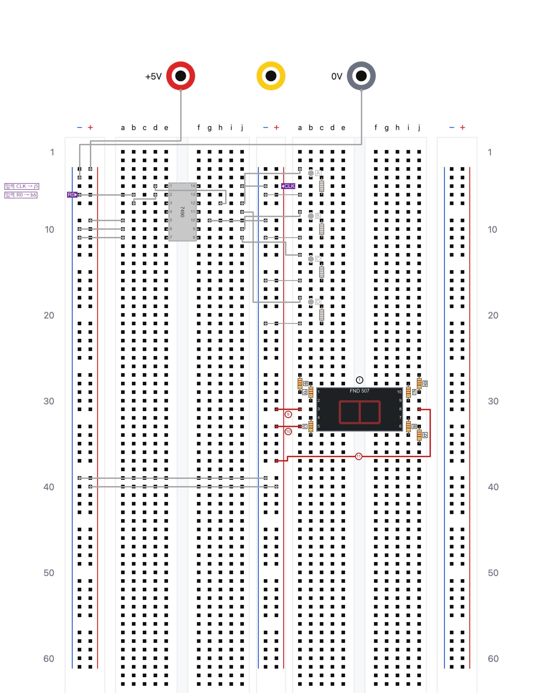</figure><ol class="steps"><li class="step" data-kind="sig"><span class="box"></span><span class="n">1</span><span class="route">(빈 자리) → 꽂는다: FND 507</span><span class="desc">FND 507: pin 1 이 우 29행 왼쪽 위 · 골을 걸쳐 꽂는다</span></li><li class="step" data-kind="sig"><span class="box"></span><span class="n">2</span><span class="route">우 i32 → 우 i34</span><span class="desc">a: 330Ω(우 i32→우 i34) · FND 507 pin 7 세그먼트 a</span></li><li class="step" data-kind="sig"><span class="box"></span><span class="n">3</span><span class="route">우 j33 → 우 j35</span><span class="desc">b: 330Ω(우 j33→우 j35) · FND 507 pin 6 세그먼트 b</span></li><li class="step" data-kind="sig"><span class="box"></span><span class="n">4</span><span class="route">우 b32 → 우 b34</span><span class="desc">c: 330Ω(우 b32→우 b34) · FND 507 pin 4 세그먼트 c</span></li><li class="step" data-kind="sig"><span class="box"></span><span class="n">5</span><span class="route">우 b30 → 우 b28</span><span class="desc">d: 330Ω(우 b30→우 b28) · FND 507 pin 2 세그먼트 d</span></li><li class="step" data-kind="sig"><span class="box"></span><span class="n">6</span><span class="route">우 a29 → 우 a27</span><span class="desc">e: 330Ω(우 a29→우 a27) · FND 507 pin 1 세그먼트 e</span></li><li class="step" data-kind="sig"><span class="box"></span><span class="n">7</span><span class="route">우 i30 → 우 i28</span><span class="desc">f: 330Ω(우 i30→우 i28) · FND 507 pin 9 세그먼트 f</span></li><li class="step" data-kind="sig"><span class="box"></span><span class="n">8</span><span class="route">우 j29 → 우 j27</span><span class="desc">g: 330Ω(우 j29→우 j27) · FND 507 pin 10 세그먼트 g</span></li><li class="step" data-kind="vcc"><span class="box"></span><span class="n">9</span><span class="route">우 a31 → 중앙VCC레일31행</span><span class="desc">FND 507 pin 3 -&gt; +5V 레일</span></li><li class="step" data-kind="vcc"><span class="box"></span><span class="n">10</span><span class="route">우 a33 → 중앙VCC레일33행</span><span class="desc">FND 507 pin 5 -&gt; +5V 레일</span></li><li class="step" data-kind="vcc"><span class="box"></span><span class="n">11</span><span class="route">우 j31 → 중앙VCC레일37행</span><span class="desc">FND 507 pin 8 -&gt; +5V 레일</span></li></ol><p><span class="box"></span><b>확인:</b> FND pin 1 자리와 330Ω 일곱 개, +5V 선 세 개를 그림과 대조했나요?</p></div>
<div class="fit" data-fit="21">
<div class="wirebox"><h3>완성본</h3>
<figure class="board">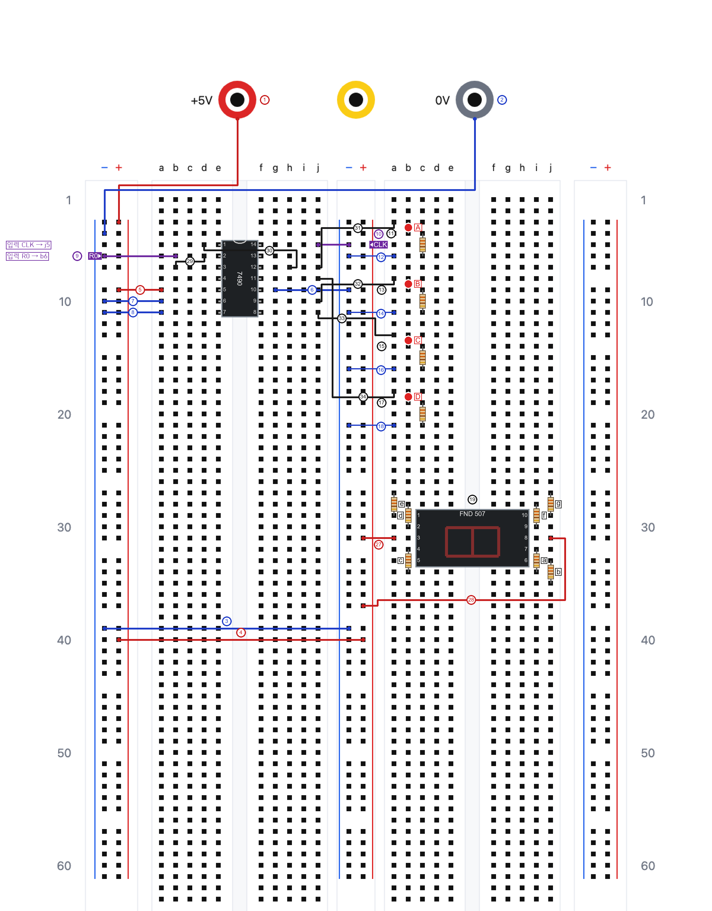</figure>
</div></div>
<div class="fit" data-fit="22">

<div class="tblock">
<h3>T5 · FND 507 Common Anode 테스트 기록</h3>
<p class="table-purpose">pin 3·8에 +5V를 주고 세그먼트 핀을 330Ω을 거쳐 GND에 대면 p16 핀표의 세그먼트가 켜지는지 확인한다.</p>
<table>
<thead>
<tr>
<th>스텝</th>
<th>조작</th>
<th>FND 핀</th>
<th>예상 세그먼트</th>
<th>실제 세그먼트</th>
</tr>
</thead>
<tbody>
<tr><td>F1</td><td>pin 7의 330Ω 끝을 GND에 댄다</td><td>7</td><td>Segment A</td><td class="fill"></td></tr>
<tr><td>F2</td><td>pin 6의 330Ω 끝을 GND에 댄다</td><td>6</td><td>Segment B</td><td class="fill"></td></tr>
<tr><td>F3</td><td>pin 4의 330Ω 끝을 GND에 댄다</td><td>4</td><td>Segment C</td><td class="fill"></td></tr>
<tr><td>F4</td><td>pin 2의 330Ω 끝을 GND에 댄다</td><td>2</td><td>Segment D</td><td class="fill"></td></tr>
<tr><td>F5</td><td>pin 1의 330Ω 끝을 GND에 댄다</td><td>1</td><td>Segment E</td><td class="fill"></td></tr>
<tr><td>F6</td><td>pin 9의 330Ω 끝을 GND에 댄다</td><td>9</td><td>Segment F</td><td class="fill"></td></tr>
<tr><td>F7</td><td>pin 10의 330Ω 끝을 GND에 댄다</td><td>10</td><td>Segment G</td><td class="fill"></td></tr>
</tbody>
</table>
<p class='readout'>계측기 설정 — 모드·레인지·단위: ________________________________</p>
</div>

<div class="circuit-notes"><b>메모</b></div>
</div></section>
<section class="circuit">
<div class="fit" data-fit="23"><div class="trail">실험 1: C1 <span class="sep">|</span> 실험 3: C2 › C3 › <b>C4</b> › C5</div><h2>C4 · 실험 3 — 2. BCD to 7-Segment 표시기 (7447 + FND 507) · 기록: T6</h2><div class="banner">앞 회로(C3)를 그대로 두고 이어 붙여요. 점퍼선은 뽑지 않아요 · 더 꽂을 칩: 7447</div></div>
<div class="stage" data-fit="24"><h3>단계 1 준비 ① · 7447·전원·제어핀 준비</h3><p class="banner">전원·신호발생기 OFF</p><figure class="board">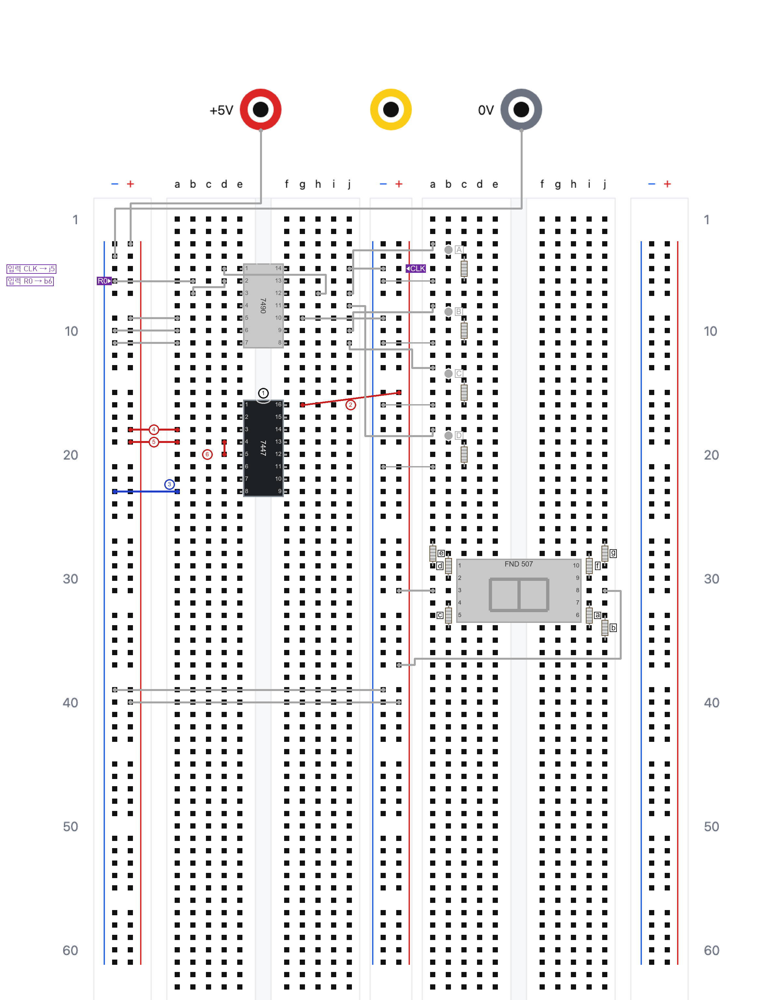</figure><p class="operation">7447을 놓고 pin 16을 VCC, pin 8을 GND에 연결해요 · pin 3·4·5를 VCC에 연결해요</p><ol class="steps"><li class="step" data-kind="sig"><span class="box"></span><span class="n">1</span><span class="route">(빈 자리) → 꽂는다: 7447</span><span class="desc">좌 16행에 새로 꽂는다</span></li><li class="step" data-kind="vcc"><span class="box"></span><span class="n">2</span><span class="route">좌 g16 → 중앙VCC레일15행</span><span class="desc">pin 16 -&gt; +5V 레일</span></li><li class="step" data-kind="gnd"><span class="box"></span><span class="n">3</span><span class="route">좌 a23 → 좌 GND레일23행</span><span class="desc">pin 8 -&gt; GND 레일</span></li><li class="step" data-kind="vcc"><span class="box"></span><span class="n">4</span><span class="route">좌 a18 → 좌 VCC레일18행</span><span class="desc">U2 pin 3 /LT -&gt; +5V 레일</span></li><li class="step" data-kind="vcc"><span class="box"></span><span class="n">5</span><span class="route">좌 a19 → 좌 VCC레일19행</span><span class="desc">U2 pin 4 /BI·/RBO -&gt; +5V 레일</span></li><li class="step" data-kind="vcc"><span class="box"></span><span class="n">6</span><span class="route">좌 d19 → 좌 d20</span><span class="desc">U2 pin 5 /RBI -&gt; pin 4 스트립(+5V)</span></li></ol><p><span class="box"></span><b>완료 확인:</b> 노치와 전원핀, 제어핀 세 개가 VCC인지 대조했나요?</p></div>
<div class="stage" data-fit="25"><h3>단계 1 준비 ② · 입력 고정</h3><p class="banner">전원·신호발생기 OFF</p><figure class="board">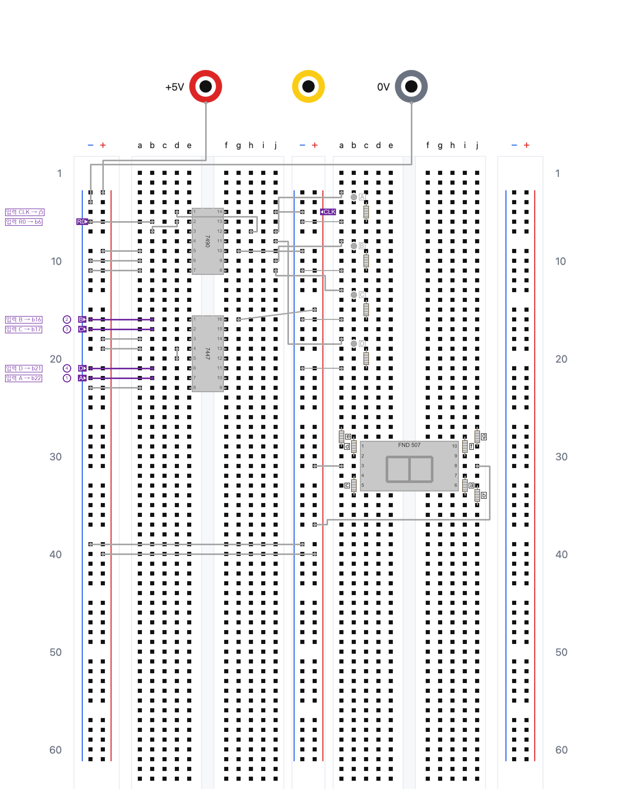</figure><p class="operation">pin 7·1·2·6을 점퍼로 GND에 연결해요 · 이 점퍼를 T6에서 옮겨요</p><ol class="steps"><li class="step" data-kind="sig"><span class="box"></span><span class="n">1</span><span class="route">좌 GND레일22행 → 좌 b22</span><span class="desc">입력 A -&gt; U2 pin 7 · 1 이면 레일 쪽 끝을 +5V 레일로 옮겨요</span></li><li class="step" data-kind="sig"><span class="box"></span><span class="n">2</span><span class="route">좌 GND레일16행 → 좌 b16</span><span class="desc">입력 B -&gt; U2 pin 1 · 1 이면 레일 쪽 끝을 +5V 레일로 옮겨요</span></li><li class="step" data-kind="sig"><span class="box"></span><span class="n">3</span><span class="route">좌 GND레일17행 → 좌 b17</span><span class="desc">입력 C -&gt; U2 pin 2 · 1 이면 레일 쪽 끝을 +5V 레일로 옮겨요</span></li><li class="step" data-kind="sig"><span class="box"></span><span class="n">4</span><span class="route">좌 GND레일21행 → 좌 b21</span><span class="desc">입력 D -&gt; U2 pin 6 · 1 이면 레일 쪽 끝을 +5V 레일로 옮겨요</span></li></ol><p><span class="box"></span><b>완료 확인:</b> 네 입력이 모두 GND에 닿았나요?</p></div>
<div class="stage" data-fit="26"><h3>단계 1</h3><p class="operation">전원을 끈 상태로 준비 ②까지 마쳐요</p><figure class="board">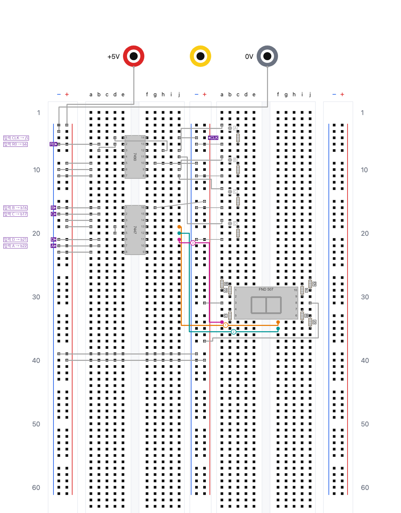</figure><ol class="steps"><li class="step" data-kind="sig"><span class="box"></span><span class="n" style="background:#e67800">1</span><span class="route">좌 j19 → 우 f34</span><span class="desc">a: U2 pin 13 -&gt; 330Ω (U3 pin 7)</span></li><li class="step" data-kind="sig"><span class="box"></span><span class="n" style="background:#009696">2</span><span class="route">좌 j20 → 우 f35</span><span class="desc">b: U2 pin 12 -&gt; 330Ω (U3 pin 6)</span></li><li class="step" data-kind="sig"><span class="box"></span><span class="n" style="background:#c81e96">3</span><span class="route">좌 j21 → 우 a34</span><span class="desc">c: U2 pin 11 -&gt; 330Ω (U3 pin 4)</span></li></ol></div>
<div class="stage" data-fit="27"><h3>단계 2</h3><figure class="board">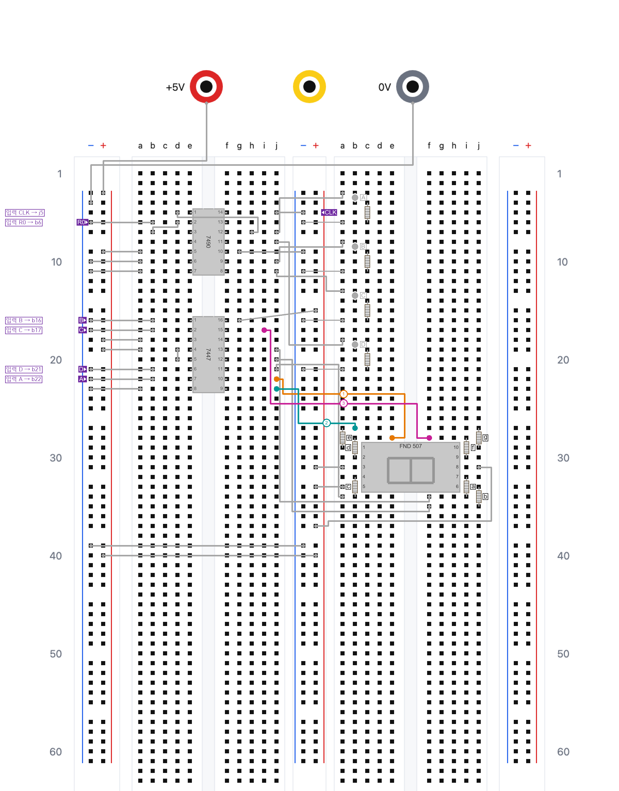</figure><ol class="steps"><li class="step" data-kind="sig"><span class="box"></span><span class="n" style="background:#e67800">1</span><span class="route">좌 j22 → 우 e28</span><span class="desc">d: U2 pin 10 -&gt; 330Ω (U3 pin 2)</span></li><li class="step" data-kind="sig"><span class="box"></span><span class="n" style="background:#009696">2</span><span class="route">좌 j23 → 우 b27</span><span class="desc">e: U2 pin 9 -&gt; 330Ω (U3 pin 1)</span></li><li class="step" data-kind="sig"><span class="box"></span><span class="n" style="background:#c81e96">3</span><span class="route">좌 i17 → 우 f28</span><span class="desc">f: U2 pin 15 -&gt; 330Ω (U3 pin 9)</span></li></ol></div>
<div class="stage" data-fit="28"><h3>단계 3</h3><figure class="board">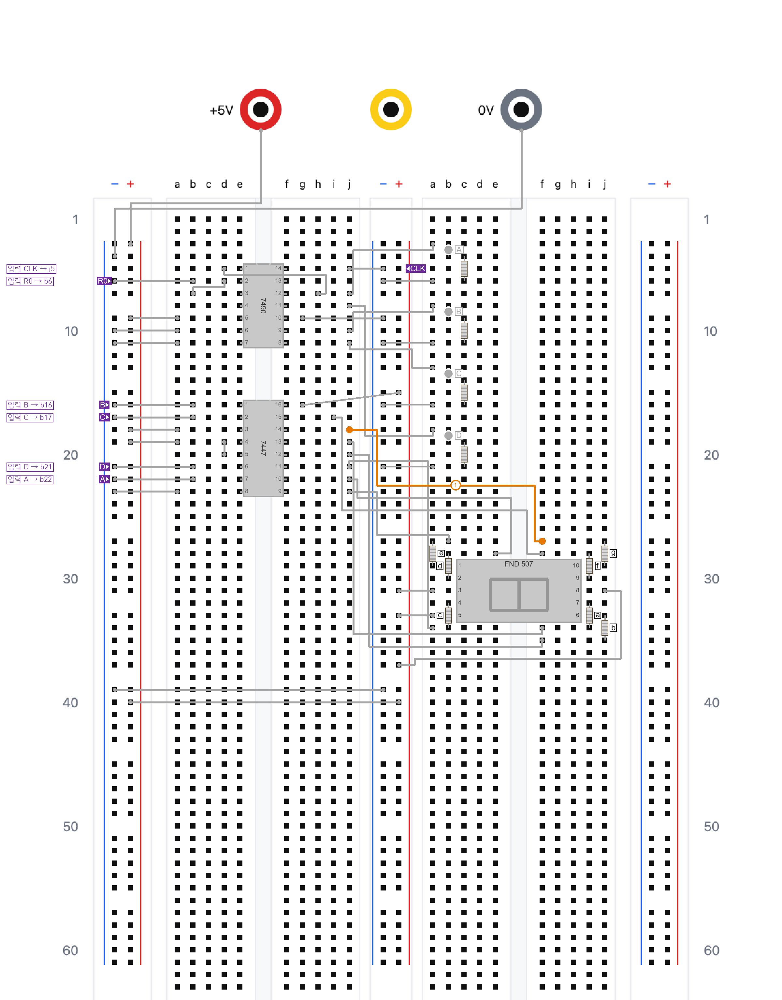</figure><ol class="steps"><li class="step" data-kind="sig"><span class="box"></span><span class="n" style="background:#e67800">1</span><span class="route">좌 j18 → 우 f27</span><span class="desc">g: U2 pin 14 -&gt; 330Ω (U3 pin 10)</span></li></ol></div>
<div class="fit" data-fit="29">
<div class="wirebox"><h3>완성본</h3>
<figure class="board">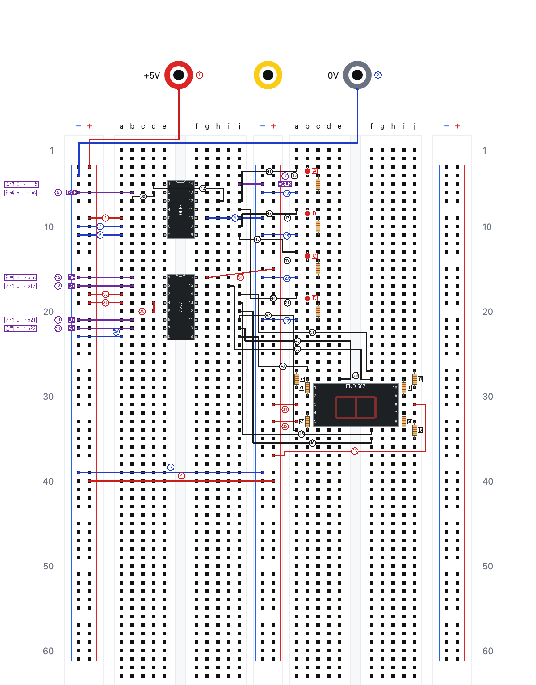</figure>
</div></div>
<div class="fit" data-fit="30">

<div class="tblock">
<h3>T6 · In/Out (All Control Pins OFF) 기록</h3>
<p class="table-purpose">7447 입력 D·C·B·A를 +5V 또는 GND로 고정했을 때 FND에 p15의 세그먼트가 켜지는지 확인한다.</p>
<table>
<thead>
<tr>
<th>스텝</th>
<th>조작</th>
<th>D</th>
<th>C</th>
<th>B</th>
<th>A</th>
<th>켜지는 세그먼트</th>
<th>예상 숫자</th>
<th>실제 숫자</th>
</tr>
</thead>
<tbody>
<tr><td>I0</td><td>입력 점퍼를 표대로 옮긴다</td><td>0</td><td>0</td><td>0</td><td>0</td><td>abcdef</td><td>0</td><td class="fill"></td></tr>
<tr><td>I1</td><td>입력 점퍼를 표대로 옮긴다</td><td>0</td><td>0</td><td>0</td><td>1</td><td>bc</td><td>1</td><td class="fill"></td></tr>
<tr><td>I2</td><td>입력 점퍼를 표대로 옮긴다</td><td>0</td><td>0</td><td>1</td><td>0</td><td>abdeg</td><td>2</td><td class="fill"></td></tr>
<tr><td>I3</td><td>입력 점퍼를 표대로 옮긴다</td><td>0</td><td>0</td><td>1</td><td>1</td><td>abcdg</td><td>3</td><td class="fill"></td></tr>
<tr><td>I4</td><td>입력 점퍼를 표대로 옮긴다</td><td>0</td><td>1</td><td>0</td><td>0</td><td>bcfg</td><td>4</td><td class="fill"></td></tr>
<tr><td>I5</td><td>입력 점퍼를 표대로 옮긴다</td><td>0</td><td>1</td><td>0</td><td>1</td><td>acdfg</td><td>5</td><td class="fill"></td></tr>
<tr><td>I6</td><td>입력 점퍼를 표대로 옮긴다</td><td>0</td><td>1</td><td>1</td><td>0</td><td>cdefg</td><td>6</td><td class="fill"></td></tr>
<tr><td>I7</td><td>입력 점퍼를 표대로 옮긴다</td><td>0</td><td>1</td><td>1</td><td>1</td><td>abc</td><td>7</td><td class="fill"></td></tr>
<tr><td>I8</td><td>입력 점퍼를 표대로 옮긴다</td><td>1</td><td>0</td><td>0</td><td>0</td><td>abcdefg</td><td>8</td><td class="fill"></td></tr>
<tr><td>I9</td><td>입력 점퍼를 표대로 옮기고 d 세그먼트가 켜졌는지도 본다</td><td>1</td><td>0</td><td>0</td><td>1</td><td>abcdfg</td><td>9</td><td class="fill"></td></tr>
</tbody>
</table>
<p class='readout'>계측기 설정 — 모드·레인지·단위: ________________________________</p>
</div>

<div class="circuit-notes"><b>메모</b></div>
</div></section>
<section class="circuit">
<div class="fit" data-fit="31"><div class="trail">실험 1: C1 <span class="sep">|</span> 실험 3: C2 › C3 › C4 › <b>C5</b></div><h2>C5 · 실험 3 — 3. 최종 BCD 카운터 (7490 + 7447 + FND 507) · 기록: T7</h2><div class="banner">앞 회로 배선은 그대로 둬요. 걷을 선은 걷기 그림(빨간 점선), 새 선은 단계 그림(회색·번호)을 따라가요 · 칩은 그대로 두고 선만 다시 꽂을 칩: 7447</div></div>
<div class="stage" data-fit="32"><h3>1단계 전 · 걷기</h3><p class="operation"><b>전원 OFF</b></p><figure class="board">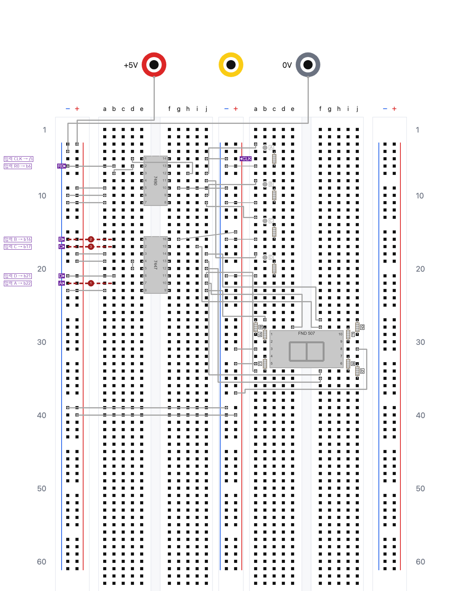</figure><p class="list-head">먼저 뽑아요</p><ul class="removals"><li class="removal"><span class="box"></span><span class="n">1</span><span class="text">좌 GND레일22행 → 좌 b22 · 입력 A -&gt; U2 pin 7 · 1 이면 레일 쪽 끝을 +5V 레일로 옮겨요</span></li><li class="removal"><span class="box"></span><span class="n">2</span><span class="text">좌 GND레일16행 → 좌 b16 · 입력 B -&gt; U2 pin 1 · 1 이면 레일 쪽 끝을 +5V 레일로 옮겨요</span></li><li class="removal"><span class="box"></span><span class="n">3</span><span class="text">좌 GND레일17행 → 좌 b17 · 입력 C -&gt; U2 pin 2 · 1 이면 레일 쪽 끝을 +5V 레일로 옮겨요</span></li></ul></div>
<div class="stage" data-fit="33"><h3>단계 1</h3><figure class="board">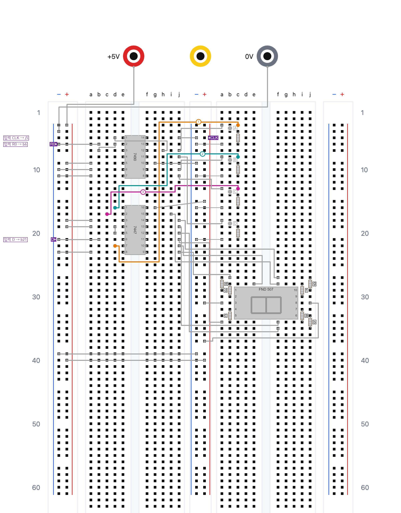</figure><ol class="steps"><li class="step" data-kind="sig"><span class="box"></span><span class="n" style="background:#e67800">1</span><span class="route">좌 d22 → 우 c3</span><span class="desc">A: U1 pin 12 (LED A 스트립) -&gt; U2 pin 7</span></li><li class="step" data-kind="sig"><span class="box"></span><span class="n" style="background:#009696">2</span><span class="route">좌 d16 → 우 c8</span><span class="desc">B: U1 pin 9 (LED B 스트립) -&gt; U2 pin 1</span></li><li class="step" data-kind="sig"><span class="box"></span><span class="n" style="background:#c81e96">3</span><span class="route">좌 c17 → 우 c13</span><span class="desc">C: U1 pin 8 (LED C 스트립) -&gt; U2 pin 2</span></li></ol></div>
<div class="stage" data-fit="34"><h3>2단계 전 · 걷기</h3><p class="operation"><b>전원 OFF</b></p><figure class="board">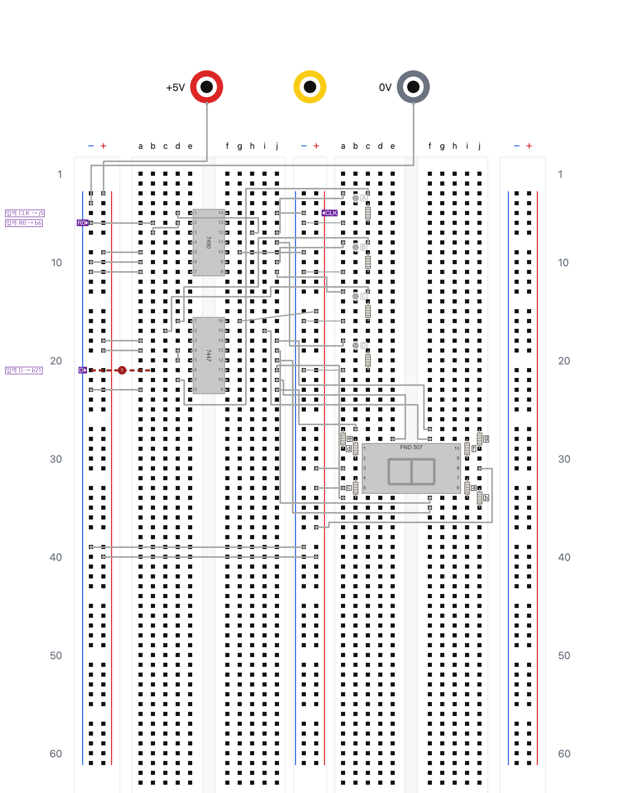</figure><p class="list-head">먼저 뽑아요</p><ul class="removals"><li class="removal"><span class="box"></span><span class="n">1</span><span class="text">좌 GND레일21행 → 좌 b21 · 입력 D -&gt; U2 pin 6 · 1 이면 레일 쪽 끝을 +5V 레일로 옮겨요</span></li></ul></div>
<div class="stage" data-fit="35"><h3>단계 2</h3><figure class="board">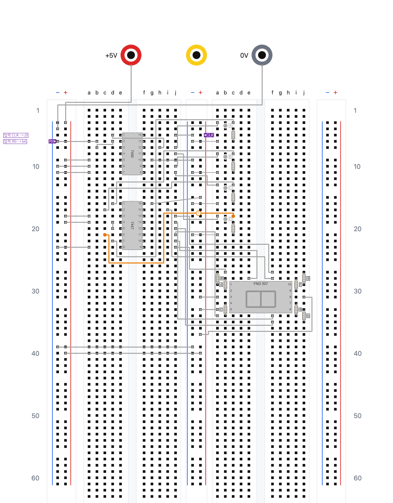</figure><ol class="steps"><li class="step" data-kind="sig"><span class="box"></span><span class="n" style="background:#e67800">1</span><span class="route">좌 c21 → 우 c18</span><span class="desc">D: U1 pin 11 (LED D 스트립) -&gt; U2 pin 6</span></li></ol></div>
<div class="fit" data-fit="36">
<div class="wirebox"><h3>완성본</h3>
<figure class="board">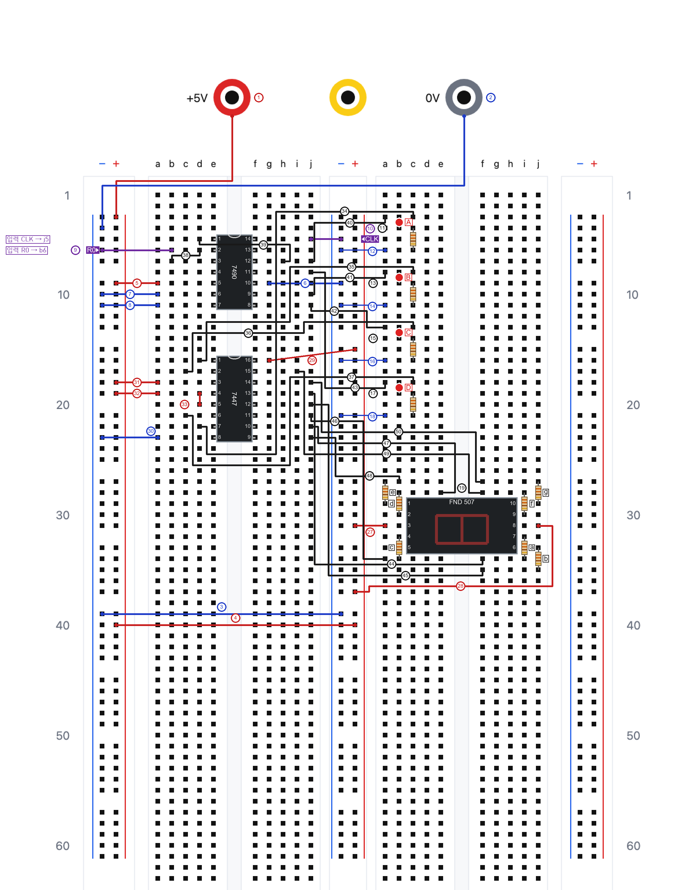</figure>
</div></div>
<div class="fit" data-fit="37">

<div class="tblock">
<h3>T7 · 7-Segment 표시기를 갖는 BCD 카운터 기록</h3>
<p class="table-purpose">최종 회로에서 R0으로 0을 표시한 뒤 해제하면 FND가 1부터 9까지 바뀌고 0으로 돌아오는지 확인한다.</p>
<table>
<thead>
<tr>
<th>스텝</th>
<th>조작</th>
<th>CLK</th>
<th>R0</th>
<th>예상 숫자</th>
<th>실제 숫자</th>
</tr>
</thead>
<tbody>
<tr><td>R1</td><td>전원을 끄고 C5를 마친 뒤 R0 점퍼를 +5V에 꽂고 전원과 발생기를 켠다. 클록이 돌아도 0을 유지하는지 본다</td><td>반복 클록</td><td>1</td><td>0</td><td class="fill"></td></tr>
<tr><td>N1</td><td>R0 점퍼를 GND로 옮긴 뒤 COUNT 1 구간</td><td>반복 클록</td><td>0</td><td>1</td><td class="fill"></td></tr>
<tr><td>N2</td><td>COUNT 2 구간</td><td>반복 클록</td><td>0</td><td>2</td><td class="fill"></td></tr>
<tr><td>N3</td><td>COUNT 3 구간</td><td>반복 클록</td><td>0</td><td>3</td><td class="fill"></td></tr>
<tr><td>N4</td><td>COUNT 4 구간</td><td>반복 클록</td><td>0</td><td>4</td><td class="fill"></td></tr>
<tr><td>N5</td><td>COUNT 5 구간</td><td>반복 클록</td><td>0</td><td>5</td><td class="fill"></td></tr>
<tr><td>N6</td><td>COUNT 6 구간</td><td>반복 클록</td><td>0</td><td>6</td><td class="fill"></td></tr>
<tr><td>N7</td><td>COUNT 7 구간</td><td>반복 클록</td><td>0</td><td>7</td><td class="fill"></td></tr>
<tr><td>N8</td><td>COUNT 8 구간</td><td>반복 클록</td><td>0</td><td>8</td><td class="fill"></td></tr>
<tr><td>N9</td><td>COUNT 9 구간. d 세그먼트가 켜졌는지도 본다</td><td>반복 클록</td><td>0</td><td>9</td><td class="fill"></td></tr>
<tr><td>N0</td><td>COUNT 0으로 복귀</td><td>반복 클록</td><td>0</td><td>0</td><td class="fill"></td></tr>
</tbody>
</table>
<p class='readout'>계측기 설정 — 모드·레인지·단위: ________________________________</p>
</div>

<div class="circuit-notes"><b>메모</b></div>
</div></section></section>
<style id="fit-pages">
@page fit-0 { size: 210mm 300mm; margin: 12mm 10mm; }
[data-fit="0"] { page: fit-0; }
@page fit-1 { size: 210mm 391mm; margin: 12mm 10mm; }
[data-fit="1"] { page: fit-1; }
@page fit-2 { size: 210mm 391mm; margin: 12mm 10mm; }
[data-fit="2"] { page: fit-2; }
@page fit-3 { size: 210mm 391mm; margin: 12mm 10mm; }
[data-fit="3"] { page: fit-3; }
@page fit-4 { size: 210mm 312mm; margin: 12mm 10mm; }
[data-fit="4"] { page: fit-4; }
@page fit-5 { size: 210mm 316mm; margin: 12mm 10mm; }
[data-fit="5"] { page: fit-5; }
@page fit-6 { size: 210mm 544mm; margin: 12mm 10mm; }
[data-fit="6"] { page: fit-6; }
@page fit-7 { size: 210mm 325mm; margin: 12mm 10mm; }
[data-fit="7"] { page: fit-7; }
@page fit-8 { size: 210mm 296mm; margin: 12mm 10mm; }
[data-fit="8"] { page: fit-8; }
@page fit-9 { size: 210mm 279mm; margin: 12mm 10mm; }
[data-fit="9"] { page: fit-9; }
@page fit-10 { size: 210mm 234mm; margin: 12mm 10mm; }
[data-fit="10"] { page: fit-10; }
@page fit-11 { size: 210mm 142mm; margin: 12mm 10mm; }
[data-fit="11"] { page: fit-11; }
@page fit-12 { size: 210mm 391mm; margin: 12mm 10mm; }
[data-fit="12"] { page: fit-12; }
@page fit-13 { size: 210mm 391mm; margin: 12mm 10mm; }
[data-fit="13"] { page: fit-13; }
@page fit-14 { size: 210mm 322mm; margin: 12mm 10mm; }
[data-fit="14"] { page: fit-14; }
@page fit-15 { size: 210mm 316mm; margin: 12mm 10mm; }
[data-fit="15"] { page: fit-15; }
@page fit-16 { size: 210mm 306mm; margin: 12mm 10mm; }
[data-fit="16"] { page: fit-16; }
@page fit-17 { size: 210mm 279mm; margin: 12mm 10mm; }
[data-fit="17"] { page: fit-17; }
@page fit-18 { size: 210mm 602mm; margin: 12mm 10mm; }
[data-fit="18"] { page: fit-18; }
@page fit-19 { size: 210mm 57mm; margin: 12mm 10mm; }
[data-fit="19"] { page: fit-19; }
@page fit-20 { size: 210mm 412mm; margin: 12mm 10mm; }
[data-fit="20"] { page: fit-20; }
@page fit-21 { size: 210mm 279mm; margin: 12mm 10mm; }
[data-fit="21"] { page: fit-21; }
@page fit-22 { size: 210mm 171mm; margin: 12mm 10mm; }
[data-fit="22"] { page: fit-22; }
@page fit-23 { size: 210mm 57mm; margin: 12mm 10mm; }
[data-fit="23"] { page: fit-23; }
@page fit-24 { size: 210mm 371mm; margin: 12mm 10mm; }
[data-fit="24"] { page: fit-24; }
@page fit-25 { size: 210mm 352mm; margin: 12mm 10mm; }
[data-fit="25"] { page: fit-25; }
@page fit-26 { size: 210mm 322mm; margin: 12mm 10mm; }
[data-fit="26"] { page: fit-26; }
@page fit-27 { size: 210mm 316mm; margin: 12mm 10mm; }
[data-fit="27"] { page: fit-27; }
@page fit-28 { size: 210mm 296mm; margin: 12mm 10mm; }
[data-fit="28"] { page: fit-28; }
@page fit-29 { size: 210mm 279mm; margin: 12mm 10mm; }
[data-fit="29"] { page: fit-29; }
@page fit-30 { size: 210mm 209mm; margin: 12mm 10mm; }
[data-fit="30"] { page: fit-30; }
@page fit-31 { size: 210mm 63mm; margin: 12mm 10mm; }
[data-fit="31"] { page: fit-31; }
@page fit-32 { size: 210mm 330mm; margin: 12mm 10mm; }
[data-fit="32"] { page: fit-32; }
@page fit-33 { size: 210mm 316mm; margin: 12mm 10mm; }
[data-fit="33"] { page: fit-33; }
@page fit-34 { size: 210mm 312mm; margin: 12mm 10mm; }
[data-fit="34"] { page: fit-34; }
@page fit-35 { size: 210mm 296mm; margin: 12mm 10mm; }
[data-fit="35"] { page: fit-35; }
@page fit-36 { size: 210mm 279mm; margin: 12mm 10mm; }
[data-fit="36"] { page: fit-36; }
@page fit-37 { size: 210mm 283mm; margin: 12mm 10mm; }
[data-fit="37"] { page: fit-37; }
</style>
